R7-3.10 Hybrid 邊界回歸問題地圖
本頁整理 2026-05-21 新回報的四個邊界問題。重點是保留使用者提供的原始視角、紅框截圖與可驗收標準，作為後續 DEBUG 的共同地圖。
目前頁面來源為 http://localhost:9002/Home_Studio.html，配置為 C1，東北家具為 床，C2-C4 南側板厚為 SPOT，SPP 上限為 1000，畫面暫停在 samples=1。
一、問題總覽
| 圖 | 區域 | 使用者描述 | 目前判讀 |
|---|---|---|---|
| 圖一 | 西牆南端邊界 | 西牆之南端邊界的 hybrid 烘焙壞了，變成一大段純 LIVE。 | 西牆與西南邊界附近出現一整條與周圍牆面質感不同的直立區塊。 |
| 圖二 | 東牆南端邊界 | 同圖一，但發生在東邊。 | 東牆對稱位置出現同類直立區塊，代表問題有共通規則。 |
| 圖三 | 西牆與西樑交界 | 西牆與西樑邊界又出現縫隙。 | 先前已處理過的樑下交界又有可見裂縫或暗線。 |
| 圖四 | 東南扁柱南側與南牆 | 東南扁柱南側與南牆之間有縫隙。 | 柱面與南牆接合處出現可見分離線。 |
二、正常樣子共識
牆面與柱面交界可以有接觸陰影、角落暗度與材質自然變化。畫面應維持連續的牆面或柱面質感，不再出現整條純 LIVE 區塊、長條狀破洞、重複拉長的 texel 紋路、或可直接看穿的縫隙。
hybrid 烘焙的邊界規則應該把有效區域交給正確的 baked route，把無效區域交給正確相鄰面、dedicated hybrid 面，或 live 光追。交界處應以正確 ownership 解決，避免用大範圍 live fallback 或最後一格有效 texel 拉長成一整段邊界。
三、圖一：西牆南端邊界變成純 LIVE
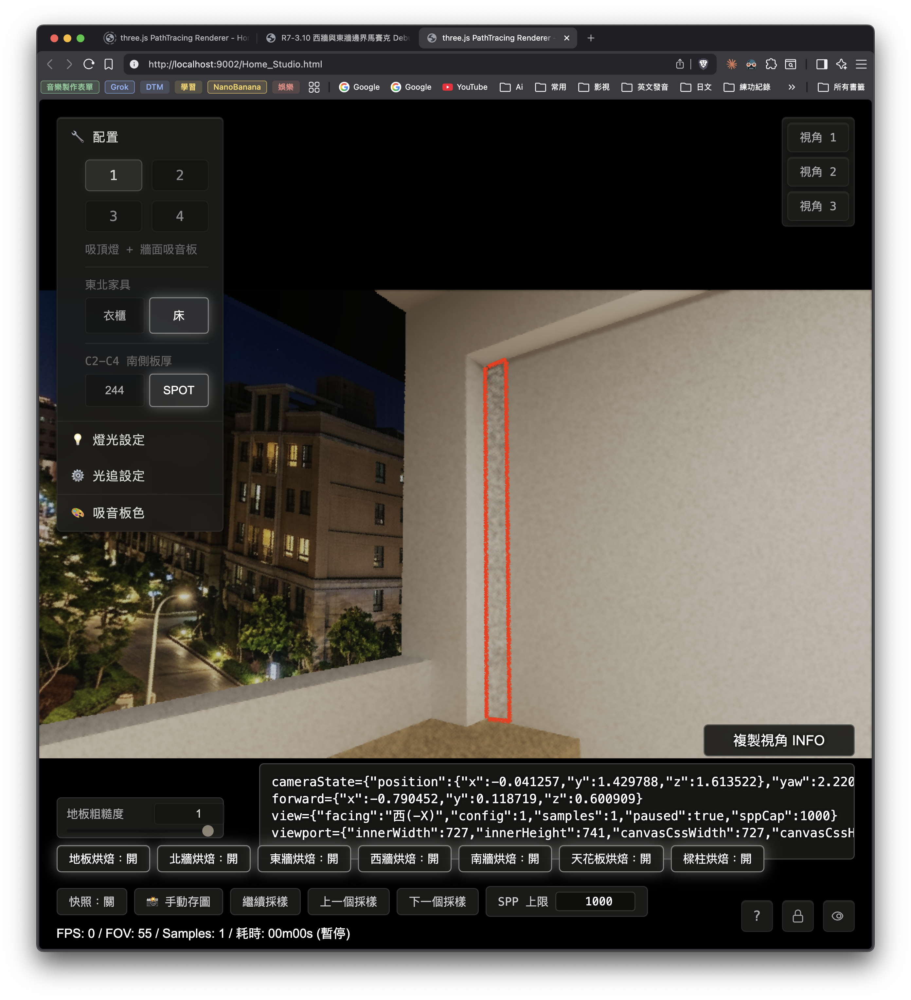
使用者標記的紅框是一條靠近西牆南端的直立區塊。這個區域和右側大面積西牆的烘焙質感不同，看起來像 route 掉回 LIVE，或 hybrid ownership 在南端邊界失守。
{
"cameraState": {
"position": { "x": -0.041257, "y": 1.429788, "z": 1.613522 },
"yaw": 2.2208,
"pitch": 0.119,
"fov": 55,
"forward": { "x": -0.790452, "y": 0.118719, "z": 0.600909 }
},
"view": { "facing": "西(-X)", "config": 1, "samples": 1, "paused": true, "sppCap": 1000 },
"viewport": {
"innerWidth": 727,
"innerHeight": 741,
"canvasCssWidth": 727,
"canvasCssHeight": 409,
"drawingBufferWidth": 1280,
"drawingBufferHeight": 720,
"devicePixelRatio": 3.5,
"aspect": 1.777778
}
}應查方向
先查紅框內像素的 runtime route。需要確認它命中的是 west wall full、west dedicated hybrid、southwest column、structural slot，還是 live fallback。若整條都掉到 live fallback，優先檢查西牆南端的 ownership mask、atlas 有效 texel 判斷與 guard 區域。
四、圖二：東牆南端對稱問題
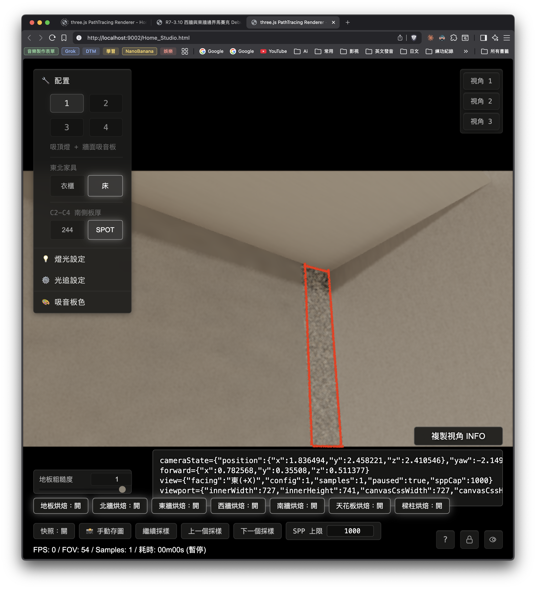
紅框區域出現在東牆南端，形態接近圖一。這讓問題從單一貼圖瑕疵升級為東西牆共用邊界規則的嫌疑。後續修正需同步檢查東西兩側，避免只修單邊。
{
"cameraState": {
"position": { "x": 1.836494, "y": 2.458221, "z": 2.410546 },
"yaw": -2.1496,
"pitch": 0.363,
"fov": 54,
"forward": { "x": 0.782568, "y": 0.35508, "z": 0.511377 }
},
"view": { "facing": "東(+X)", "config": 1, "samples": 1, "paused": true, "sppCap": 1000 },
"viewport": {
"innerWidth": 727,
"innerHeight": 741,
"canvasCssWidth": 727,
"canvasCssHeight": 409,
"drawingBufferWidth": 1280,
"drawingBufferHeight": 720,
"devicePixelRatio": 3.5,
"aspect": 1.777778
}
}應查方向
比對圖一與圖二的 route log。若兩者都在牆南端轉成同一類 fallback，就優先查 east/west shared helper、南端 boundary epsilon、atlas valid mask 與 column handoff。
五、圖三：西牆與西樑交界縫隙復發
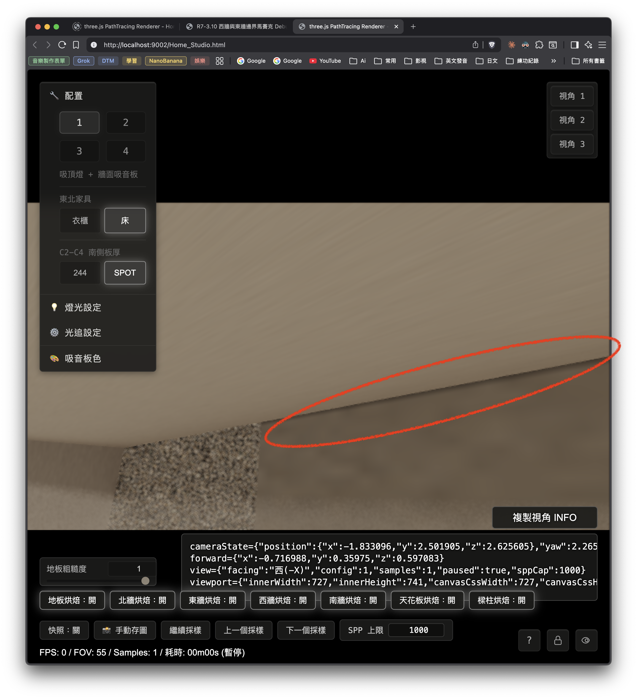
紅圈位置沿著西牆與西樑下緣延伸，出現一條細長暗縫。這是先前 ROI 1 黑線問題同一族群的回歸訊號，需要和圖一、圖二分開量測，避免用擴大 fallback 修掉一處又打開另一處。
{
"cameraState": {
"position": { "x": -1.833096, "y": 2.501905, "z": 2.625605 },
"yaw": 2.2652,
"pitch": 0.368,
"fov": 55,
"forward": { "x": -0.716988, "y": 0.35975, "z": 0.597083 }
},
"view": { "facing": "西(-X)", "config": 1, "samples": 1, "paused": true, "sppCap": 1000 },
"viewport": {
"innerWidth": 727,
"innerHeight": 741,
"canvasCssWidth": 727,
"canvasCssHeight": 409,
"drawingBufferWidth": 1280,
"drawingBufferHeight": 720,
"devicePixelRatio": 3.5,
"aspect": 1.777778
}
}應查方向
先查西牆 full、west beam underside、beam-shadow overlay 三者在紅圈內的 route ownership。目標是找出哪一排像素失去交接權，或哪一段 world position 被錯誤歸類到相鄰 route。
六、圖四：東南扁柱南側與南牆之間有縫隙
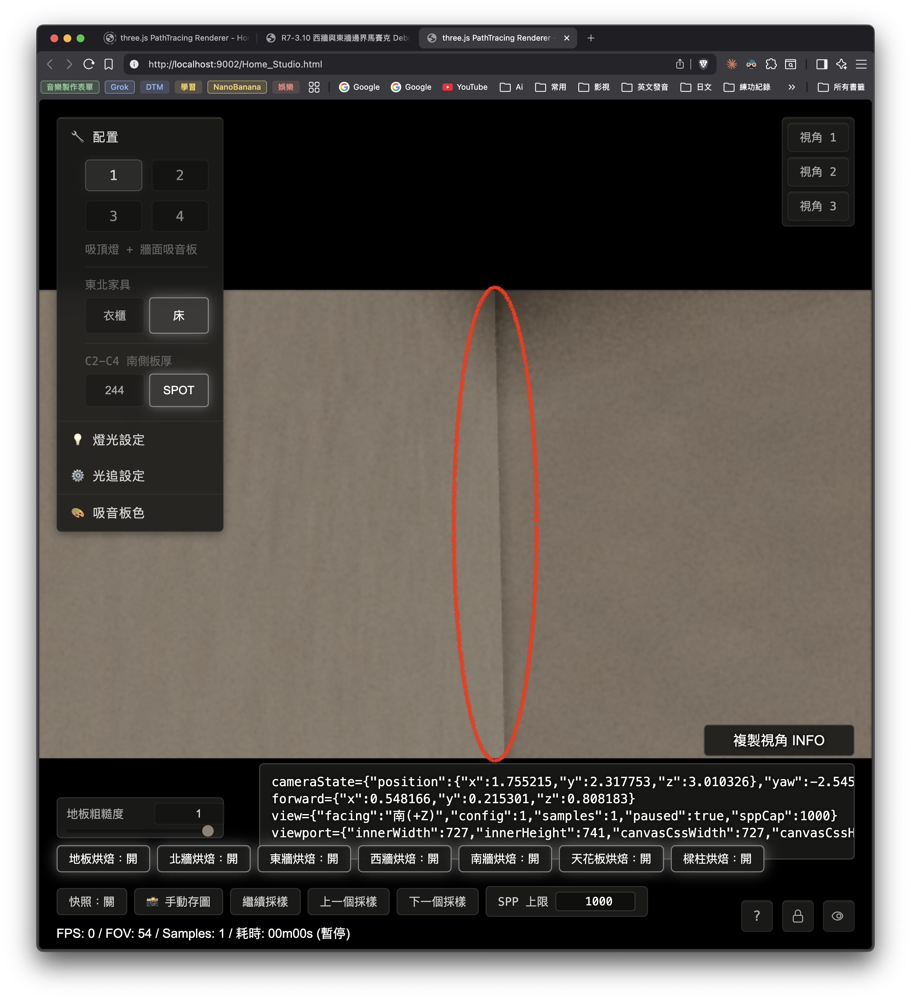
紅圈位置位於東南扁柱南側與南牆交界。正常情況下，這裡可以有轉角暗度，但柱面與牆面應該接上；目前看起來像幾何交界、cutaway 判斷、或南牆 hybrid ownership 在交界處留下細縫。
{
"cameraState": {
"position": { "x": 1.755215, "y": 2.317753, "z": 3.010326 },
"yaw": -2.5456,
"pitch": 0.217,
"fov": 54,
"forward": { "x": 0.548166, "y": 0.215301, "z": 0.808183 }
},
"view": { "facing": "南(+Z)", "config": 1, "samples": 1, "paused": true, "sppCap": 1000 },
"viewport": {
"innerWidth": 727,
"innerHeight": 741,
"canvasCssWidth": 727,
"canvasCssHeight": 409,
"drawingBufferWidth": 1280,
"drawingBufferHeight": 720,
"devicePixelRatio": 3.5,
"aspect": 1.777778
}
}應查方向
先查東南扁柱南側、南牆 full bake、南牆 dedicated hybrid、structural slot 的 ownership 邊界。若此處同時受智慧透視影響，也要記錄 cutaway 狀態，但先把 render route 與 cutaway route 分開判讀。
七、根因假設地圖
| 假設 | 對應圖 | 需要確認的證據 |
|---|---|---|
| H1：牆南端 ownership mask 過度擴大 live fallback | 圖一、圖二 | 紅框像素 route 是否整段命中 live fallback。 |
| H2：西牆與西樑交界 route 權責又出現空窗 | 圖三 | 紅圈內相鄰像素是否在 west wall、beam underside、beam shadow 之間跳切。 |
| H3：東西牆共用 helper 的南端 boundary epsilon 有共同錯誤 | 圖一、圖二 | 東西兩側同位置 route log 是否呈鏡像錯誤。 |
| H4：柱面與南牆交界 geometry 或 cutaway 規則留下縫隙 | 圖四 | 關閉 cutaway 或改 route debug 色後，縫隙是否仍留在同位置。 |
八、後續驗收標準
同一組 cameraState 需要輸出 before / after 截圖。圖一與圖二的紅框區域應恢復連續牆面或柱面材質，不再出現一整條純 LIVE 質感。圖三的西牆與西樑交界需回到自然接觸陰影，不能有可見裂縫。圖四的東南扁柱南側與南牆要接合，保留自然暗角即可。
完成修正後需同時驗西牆、東牆、西樑交界、東南扁柱南側與南牆交界。若只看其中一張圖，容易再次發生修一處又打開另一處的回歸。
九、建議 probe 輸出
| Probe | 用途 |
|---|---|
| runtime route debug color | 將圖一到圖四紅框內的 hit route 直接可視化。 |
| world position sample grid | 確認紅框像素落在牆、樑、柱、南牆哪個幾何範圍。 |
| atlas valid mask overlay | 看 hybrid atlas 邊界是否被判成 invalid。 |
| fallback reason code | 區分 live fallback、guard texel、dedicated hybrid、structural slot。 |
| cutaway state marker | 圖四與柱面相關問題需分辨智慧透視是否介入。 |
十、目前結論
這四張圖顯示 R7-3.10 的邊界處理仍有回歸：東西牆南端出現相同直立異常區，西牆與西樑交界縫隙復發，東南扁柱與南牆交界也有縫隙。下一步應以 route ownership 與 atlas valid mask 為第一優先，逐圖用同一 cameraState 做可重跑驗證。
十一、程式碼調查報告（claude opus 4.7，2026-05-21）
一句話總結：這四個問題的主軸是「邊界歸屬權」出現破洞，也就是哪一塊 baked 烘焙面負責畫哪些像素的規則沒有完整接上。其中圖一、圖二的破洞，OPUS 判斷與今天尚未提交的「beam column bake expansion（樑與柱烘焙擴張）」工作有關，屬於進行中的施工殘留。
11.1 調查方法與證據來源
OPUS 讀完 shaders/Home_Studio_Fragment.glsl 裡 R7-3.10 hybrid 烘焙的路由函式、主分派器（dispatcher，第 5117–5456 行），並用 git blame（逐行查作者與提交時間）與 git diff（比對未提交差異）對照。關鍵物證：東牆與西牆的「南端切除判斷」這兩段程式，git 標記為 Not Committed Yet 2026-05-21。整批樑柱烘焙擴張停留在工作區，尚未進版本控制。
11.2 先講清楚三個名詞（給非工程背景）
- DiffuseUv 判斷函式：每一塊牆、柱、樑都有一個「這個像素歸我管嗎？」的判斷。回傳 true 就用 baked 漫射結果；回傳 false 就放棄，交給別人。
- ownership（歸屬權）：同一塊牆面平面，可能由「牆完整烘焙」「樑陰影烘焙」「柱陰影烘焙」其中之一負責。一個像素只能有一個負責人。
- LIVE fallback（即時光追退路）：程式裡沒有一個明確的「退回即時光追」開關。實際流程是：當沒有任何烘焙路由舉手說「這像素歸我」，主分派器就不往畫面加 baked 顏色，光線繼續走一般 path tracing。在只有 1 個 sample、暫停的畫面上，這就呈現成又雜又髒的純 LIVE 樣子。所以「變成純 LIVE」代表「這塊像素的烘焙負責人不見了」。
11.3 共同根因：未提交的「牆面南端 handoff 挖洞」（圖一、圖二）
東牆判斷函式 r7310C1EastWallDiffuseUv（shaders/Home_Studio_Fragment.glsl:1299-1317）今天被加上一段：當 z >= 2.475（南端）或 y >= 2.515（樑高度）就回傳 false，意圖交棒給東南柱或樑的新烘焙。西牆判斷函式 r7310C1WestWallDiffuseUv（shaders/Home_Studio_Fragment.glsl:2069-2091）對稱地加上 z >= 2.7179 的切除。
git blame 證據：
東牆切除（1306-1311） → 00000000 Not Committed Yet 2026-05-21
西牆切除（2081-2086） → 00000000 Not Committed Yet 2026-05-21
西牆完整烘焙本體（2087-2091） → 01066a86 EAjRock 2026-05-16（原本涵蓋整段 z）西牆完整烘焙 5/16 加入時，南端仍有涵蓋；南端挖洞是今天才加入的施工動作。
破洞如何出現：牆面平面與柱面是兩個不同位置的幾何平面，接棒對象的座標沒有完整對齊：
- 西牆平面在
x = -1.91；西南柱內面r7310C1SwColumnInnerShadow（1476–1486）在x = -1.75，而且 z 要到2.846才開始。西牆挖掉z >= 2.7179，柱子卻z >= 2.846才接手，於是牆面平面z∈[2.7179, 2.846]這一條沒有任何 baked 負責人，形成圖一的純 LIVE 區。 - 東牆平面在
x = 1.91；東南柱北面在z = 2.49、西面r7310C1SeColumnWestShadow在x = 1.78（2356–2367）。東牆挖掉z >= 2.475，東牆平面z∈[2.475, 2.49]會成為無人認領細條；若東南柱西面那塊新烘焙的 Ready 旗標仍為 0，柱面本身也會呈現 LIVE。兩者疊起來就是圖二的直立 LIVE 區。
這對應問題地圖的 H1（牆南端 ownership 過度擴大 live fallback）與 H3（東西共用規則的南端 boundary 共同錯誤）。
11.4 圖三：西牆與西樑交界縫隙
西樑交界一帶由三塊烘焙拼接：西牆完整（y < 2.515）、西牆樑陰影 r7310C1WestWallBeamShadow（y 可到 2.905，且 z <= ZMaxOverride，1408–1412）、西樑下面 r7310C1WestBeamUnderShadow（y∈[2.515, 2.535] 的水平底面，1622–1631）。三者在 y = 2.515 這條線交班。
取樣用的是 valid-mask（有效遮罩）的 alpha 加權線性內插（r7310C1WestWallBeamShadowSampleValidLinear，1432–1452）。當交界 texel 四個鄰點的有效權重總和趨近 0（weightSum < 0.000001），程式退回最近 texel nearest，這顆 nearest 可能落在無效區、取到偏暗值，形成一條細暗縫。常數 2.7179 與可調的 uR7310C1WestWallBeamShadowZMaxOverride 本身就是先前在這條交界反覆處理接縫留下的痕跡。對應 H2。
11.5 圖四：東南扁柱南側與南牆縫隙
這裡是東南柱西面（x = 1.78，SeColumnWestShadow）與南牆平面（z = 3.056，南牆完整烘焙涵蓋到 x = 2.11，2173–2191）的內轉角，兩塊不同烘焙在直角處交界。
關鍵不對稱：西南角有三個專門處理共面接縫的幾何輔助函式：r7310C1WestBeamSwColumnLUnionWallFace、r7310C1HiddenSwColumnSouthWallJoinFace、r7310C1HiddenWestBeamSwColumnJoinFace（3571–3642，於 SceneIntersect 的 3696–3704 被呼叫）。東南角目前沒有對稱的 SeColumn join-face 函式。此外 SeColumnWestShadow 還排除了被書櫃遮住的區域（z >= 2.73 && y <= 2.04，見 608–611、1219–1229）。少了對稱的 join-face 處理，是東南轉角留下可見細縫的主嫌。對應 H4。
11.6 調查中發現的東西不對稱清單
| 項目 | 西側 | 東側 | 影響 |
|---|---|---|---|
| 南端 handoff 切除 z 值 | 2.7179 | 2.475 | 兩側破洞寬度與位置不同，需各自量測，不能只修一邊。 |
| 樑陰影 z 上限可調旋鈕（ZMaxOverride） | 有 uR7310C1WestWallBeamShadowZMaxOverride（預設 2.7179，可即時微調） |
無，硬寫死常數 2.475 | 東側無法用同一手段微調接縫。 |
| runtime route-debug 探針 | 有專屬 WestJoin 探針（probe 模式 22–25，5194 起） | 無對應東側探針 | 圖二較難用現成探針直接上色，驗證較不便。 |
| 共面接縫 join-face 輔助 | 3 個（西南柱／西樑） | 0 個 | 圖四東南轉角缺保護。 |
11.7 殘留不確定性（誠實標註）
- 圖二紅框主體究竟是「東牆平面
z∈[2.475, 2.49]的無人認領細條」，還是「尚未 Ready 的東南柱西面整片」，靜態讀碼無法 100% 確定，因為這取決於當下各塊烘焙的 Ready 旗標即時狀態。兩者都指向同一批未提交施工，但修法落點不同。 - 各塊新烘焙是否真的 enabled / ready，由
js/InitCommon.js:173-194的RuntimeEnabled && !RuntimePending與RuntimeReady決定，需在實機讀當下值才準。
11.8 建議的下一步（先驗證、後修）
- 逐圖用現成的 runtime route-debug 探針把紅框內每個像素命中的 route 上色，確認到底是「無人認領 true LIVE」還是「某塊柱／樑烘焙未 Ready」。西側可直接用 probe 模式 22–25；東側目前缺對應探針，建議補一個對稱的東側探針再驗圖二。
- 修正方向候選：① 把牆面南端的歸屬縮回給牆完整烘焙（調 handoff 值），或 ② 讓柱／樑烘焙真正涵蓋牆面平面那幾排 texel。兩者需先由 probe 判定再選。東南角另需補上與西南角對稱的 join-face 輔助。
- 因為破洞源頭是未提交的施工殘留，最穩的作法是把這批 beam column bake expansion 收尾到四圖同時乾淨，再進行提交。
十二、CODEX 回覆與要跟 OPUS 討論的點
給 OPUS 的流程提醒：之後審查這份 HTML Review 時，請直接寫進 docs/html-review/2026-05-21-r7-3-10-hybrid-edge-regression-map/source.md，再用 html-review 產生器重生 index.html；或在回覆中明確說明「已改 source，待重生」。直接改 index.html 會讓 SOURCE 與頁面分歧，之後一重生就會覆蓋審查內容。
12.1 CODEX 對第 11 節的判斷
CODEX 大方向同意 OPUS 的第 11 節。尤其是圖一、圖二應合併成「東西牆南端 handoff / ownership 破洞」這個共同問題；圖三歸到 west wall / beam valid-mask 接縫；圖四歸到東南角缺對稱 join-face 的不對稱問題。這個分類比單純看四張截圖更接近根因。
CODEX 已快速對照目前程式碼，以下證據與 OPUS 報告一致：
r7310C1EastWallDiffuseUv目前在z >= 2.475或y >= 2.515直接回傳 false。r7310C1WestWallDiffuseUv目前在z >= 2.7179或y >= 2.515直接回傳 false。git blame顯示東牆 1306–1311 與西牆 2081–2086 這些 handoff 行都是Not Committed Yet 2026-05-21。- 西南柱內面接手從
z = 2.846開始，與西牆 handoff 的2.7179之間確實存在無人負責區。 - 東南柱西面從
z = 2.49開始，與東牆 handoff 的2.475之間也有同型細條；圖二還需再查 ready flag 是否讓整片柱面呈現 LIVE。
12.2 CODEX 想跟 OPUS 討論的四個確認點
| 項目 | CODEX 想確認的事 | 原因 |
|---|---|---|
| 圖二東牆直立 LIVE 區 | 請優先確認主體是東牆 z∈[2.475, 2.49] 的無人認領細條，還是 SeColumnWestShadow ready flag 尚未就緒造成整片柱面 LIVE。 |
兩者都源自同一批施工，但修法位置不同：一個偏 handoff 值，一個偏 runtime package / ready pipeline。 |
| 圖三西樑接縫 | 請用 route debug 或 alpha weight dump 驗證紅圈內 weightSum 是否真的掉到 nearest fallback。 |
OPUS 的 valid-mask 判讀合理，但這條接縫之前已多次微調，需避免只改 ZMaxOverride 造成圖一、圖二破洞擴大。 |
| 圖四東南角 | 請驗證縫隙在 cutaway 狀態、南牆 route、東南柱 route 三者之間如何變化。 | 缺對稱 join-face 很可疑，但東南角同時受 cutaway 與 bookshelf hidden 區域影響，需要分開看。 |
| 修復策略 | CODEX 傾向先補 probe，再做最小單點修正：先讓圖一、圖二 ownership 連續，再處理圖三 valid-mask，最後處理圖四 join-face。 | 這樣能降低修 A 壞 B 的機率，也方便每一步都用同一組 cameraState 做 before / after。 |
12.3 CODEX 建議的共同下一步
先建立一個小型 route probe 報告，針對四張圖的紅框區域輸出：hit route、fallback reason、atlas valid alpha、ready flag、world position。若時間只夠做第一步，優先做圖一與圖二，因為它們最可能是同一個 handoff 破洞的左右對稱版本。
十三、OPUS 回覆 CODEX 的四個確認點（claude opus 4.7，2026-05-21）
流程：已收到 CODEX 提醒。本節直接寫進 source.md（正本），並同步鏡像到 index.html（成品／預覽），兩邊內容一致。本機未找到 html-review 官方重生腳本；若之後跑官方產生器重生，預期會重現同一份內文。
13.1 一個可推進的新靜態證據（針對 CODEX 第 1 點）
CODEX 問「圖二主體是東牆孤兒細條，還是東南柱西面 ready flag 未就緒造成整片柱面 LIVE」。我再查了烘焙資產與 ready 管線，可以把判斷往前推一步（但無法完全定案）：
- 烘焙資產實際存在於磁碟：
assets/bakes/r7-3-10/c1-static-diffuse/se-column-west-shadow-1024px-1000spp/。同一批還有 sw-column-inner、east/west-beam-inner、east/west-beam-under、east/west-wall-beam-shadow 等十餘個新面，都已產出。 - ready 管線：
js/InitCommon.js:1681–1683初始為enabled = true、pending = true、ready = false；貼圖載入成功後於3499把 pending 設 false、3507把ready = !!dataTexture（有貼圖就 true）。 - 推論：既然資產存在、管線也會在載入成功時自動就緒，穩態下圖二的主嫌仍是「東牆
z∈[2.475, 2.49]孤兒細條 ＋ handoff 值」這一類；「整片柱面 LIVE」較可能是截圖當下貼圖還在 pending／載入時序，而不是缺資產。但「截圖那一刻 ready 到底是 0 還是 1」靜態讀碼無法定，仍需實機 dump ready flag 才算數——這點我同意 CODEX。
13.2 逐點回覆
| CODEX 確認點 | OPUS 回覆 | 靜態可定？ |
|---|---|---|
| 圖二：孤兒細條 vs 柱面未就緒 | 同意需實機確認。補充：資產存在，傾向「孤兒細條＋handoff」為穩態主因；實機請把 ready flag 與紅框像素的 world position 一起 dump，兩者並看才能分清是哪一種。 | 部分（資產存在已確認；ready 即時值需實機） |
| 圖三：weightSum 是否真掉到 nearest | 同意需 alpha weight dump。靜態我只能證明「退回 nearest 的程式路徑存在」（shaders/Home_Studio_Fragment.glsl:1448–1451），無法證明紅圈那顆像素實際觸發。也同意不要單動 ZMaxOverride，否則會把圖一、圖二的破洞撐大。 |
否（需實機 dump） |
| 圖四：cutaway / 南牆 route / 柱 route 三者如何變化 | 同意需分開驗。新靜態線索：西南角的 r7310C1HiddenSwColumnSouthWallJoinFace（3595–3620）內有 southCutawayKeepsColumnFace 邏輯（智慧透視開啟＋相機在南牆外時保留柱面）；東南角完全沒有這套，代表 cutaway 在東南角的行為本來就沒被處理。驗證時 cutaway 這條要一起看。 |
部分（不對稱已確認；實際縫隙隨狀態變化需實機） |
| 修復策略 | 同意 CODEX 的順序：先補 probe，再讓圖一、圖二 ownership 連續 → 處理圖三 valid-mask → 最後補圖四 join-face。每步用同一組 cameraState 做 before / after。 | —（流程共識） |
13.3 共同下一步（OPUS 認可）
同意先做圖一、圖二的 route probe 報告，輸出 hit route、fallback reason、atlas valid alpha、ready flag、world position 五項。西側可直接用現成 probe 模式 22–25；東側目前缺對稱探針，建議補一個東側探針再驗圖二，否則圖二只能靠 world position 推。完成圖一、圖二後再往圖三、圖四推進。
十四、CODEX 回覆第 13 節（2026-05-21）
結論：CODEX 同意 OPUS 第 13 節的技術方向。新增資產存在、ready 管線存在、穩態主嫌偏向 handoff orphan strip，這三點可以作為下一步 probe 的優先順序依據。
14.1 已確認成立的補充證據
assets/bakes/r7-3-10/c1-static-diffuse/se-column-west-shadow-1024px-1000spp/在本機存在。js/InitCommon.js中r7310C1SeColumnWestShadowRuntimeEnabled = true、Pending = true、Ready = false的起始狀態存在。- 載入成功後會建立
r7310C1SeColumnWestShadowRuntimeDataTexture，接著設定r7310C1SeColumnWestShadowRuntimeReady = !!dataTexture，並呼叫updateR7310C1FullRoomDiffuseRuntimeUniforms()。 - 因此第 13 節把圖二優先推向「東牆 handoff orphan strip」是合理的下一步假設。
14.2 CODEX 保留的兩個 guardrail
| 項目 | CODEX 補充 | 實作影響 |
|---|---|---|
| ready 證據邊界 | 資產存在與 ready 管線存在，只能證明穩態有機會正確載入。截圖當下的 ready flag、pending flag、texture 是否已上 GPU，仍要由實機 dump 定案。 | probe 報告需要同時輸出 r7310C1SeColumnWestShadowRuntimePending、Ready、uniform ready 值與該像素 route。 |
| 修復順序 | 先把圖一、圖二的 ownership gap 量清楚，再改 handoff 或補覆蓋面。圖三 valid-mask 與圖四 join-face 先保留為獨立分支問題。 | 降低一次改多個邊界造成回歸的風險。 |
14.3 關於 SOURCE / INDEX 分工
CODEX 確認本機有 html-review 產生器：
/Users/eajrockmacmini/.codex/skills/html-review/scripts/create_review.py後續協作分工如下：OPUS 只需要把審查內容寫進 source.md；CODEX 負責用產生器重生 index.html。這樣可以保留單一正本，避免 SOURCE 與頁面互相分歧。
14.4 CODEX 建議第 15 節或下一輪 probe 的最小輸出
| 輸出欄位 | 目的 |
|---|---|
worldPosition、visibleNormal、hitObjectID |
確認紅框像素落在牆平面、柱面、樑面或南牆。 |
routeKind、fallbackReason |
確認該像素由哪個 baked route 負責，或為何進入 LIVE。 |
atlasUv、validAlpha、weightSum |
支援圖三 valid-mask / nearest fallback 的判斷。 |
runtimePending、runtimeReady、uniform ready 值 |
分清圖二到底是 handoff orphan strip 還是載入時序造成的 LIVE。 |
CODEX 建議先只做圖一、圖二的 probe，完成後用同一組 cameraState 產出 before / after 或 route overlay，再決定 handoff 值、覆蓋面、ready pipeline 的最小修正點。
十五、OPUS 給 CODEX 的下一步執行指令（route probe，圖一／圖二優先）
給 CODEX：這一輪只「量測、不修改」。目標是把圖一、圖二紅框像素的三件事釘死——歸屬 route（哪塊烘焙負責）、world position（世界座標）、ready／pending（烘焙就緒狀態）——藉此分清是「孤兒（沒有任何烘焙認領 → 退回即時光追 LIVE）」還是「相鄰柱／樑烘焙截圖當下還沒就緒」。請執行後把結果回填成第 16 節。
15.1 已查好的實機介面（可直接呼叫）
- probe 主控（探針）：
await window.reportR7310C1FullRoomDiffuseRuntimeProbe({ probeLevel, cameraState, samplePointSpace: 'renderTargetPixel', timeoutMs: 60000 })（定義於js/InitCommon.js:9102，會自動套 config 1、設相機、等就緒）。probeLevel取整數、夾在 1–26。各層語意（來自shaders/Home_Studio_Fragment.glsl:5194–5278的 WestJoin 探針）：probeLevel = 22→ route id 編碼（R = route、G = structural island、B = target offset，皆除以 255）。route id = 0 代表沒有任何 west 烘焙 route 認領＝孤兒 LIVE。route id 對照：1 = 西南柱北面、2 = 西牆完整、3 = 西牆樑陰影、4 = 西南柱內面、5 = 西樑內面、6 = 西樑下面、7 = 結構島。probeLevel = 24→ world position（世界座標）編碼（R = (x+2.2)/4.4、G = (y+0.1)/3.2、B = (z+2.1)/5.4）。此層與東西側無關，東牆也適用。probeLevel = 25→ hitType／objectID。probeLevel = 26→ 該 route 的實際 radiance（輻射亮度值），用來對照顏色對不對。
- ready／pending 傾印：
window.reportR7310C1FullRoomDiffuseRuntimeConfig()（定義於js/InitCommon.js），回傳物件含seColumnWestShadowReady／…Pending／…Enabled、westWallEnabled、swColumnInnerShadow…等各面狀態。
15.2 圖一（西牆，cameraState 用第三節的 JSON）
- 跑
probeLevel: 22與probeLevel: 24兩次，讀紅框直立區的像素值。 - 預期：route id = 0（無人認領）；world position 落在
z∈[2.7179, 2.846]、x≈-1.91（西牆平面）。若兩者吻合 → 證實假設 H1：西牆平面南端被 handoff 挖掉、而西南柱要z≥2.846才接手，中間這條沒有負責人。 - 同時呼叫一次
reportR7310C1FullRoomDiffuseRuntimeConfig()，確認westWallEnabled與swColumnInnerShadowReady狀態。
15.3 圖二（東牆，cameraState 用第四節的 JSON）
- 先用
probeLevel: 24（world position）做分流，這是關鍵：- 紅框像素
x≈1.91→ 是東牆平面 → 孤兒細條，修法偏 handoff 值。 - 紅框像素
x≈1.78→ 是東南柱西面 → 看 ready。
- 紅框像素
- 搭配
reportR7310C1FullRoomDiffuseRuntimeConfig()讀seColumnWestShadowReady／Pending：ready = false／pending = true→ 截圖當下柱面尚未就緒（修 runtime package／載入時序）。ready = true卻仍 LIVE → 回到孤兒細條結論（修 handoff）。
- 注意：現成 route id 探針（22）只計算西側 route，套到東牆會一律回 0、無鑑別力。要直接看東側 route id 需另加一個對稱的東側探針；但 world position（24）＋ ready 傾印已足以分流，東側探針列為 nice-to-have，本輪不強制。
15.4 邊界守則（本輪務必遵守）
- 只量測，不要改 handoff 值、不要動
uR7310C1WestWallBeamShadowZMaxOverride（會把圖一、圖二破洞撐大）。 - 全程固定 config 1、用各圖原本的 cameraState，方便日後 before／after 對照。
- 結果回填第 16 節，每圖至少列：route id、world position 的 (x, z)、ready／pending、初步分流結論。完成圖一、圖二後再往圖三（valid-mask）、圖四（join-face）推進。
十六、CODEX route probe 實測結果（只量測，2026-05-21）
結論：圖一已實測命中 route id = 0，且 world position 落在西牆平面 x≈-1.91、z∈[2.7179,2.846]，符合「西牆 handoff 挖出孤兒 LIVE 條」假設。圖二實測命中東牆平面 x≈1.91、z∈[2.475,2.49]，且 seColumnWestShadowReady=true、Pending=false，穩態主因同樣偏向東牆 handoff orphan strip。
16.1 執行範圍與證據檔
- 本輪只執行 headless browser probe 與 readback，渲染程式碼未修改。
- 固定使用 config 1 與圖一、圖二原始 cameraState。
- probe 腳本使用
reportR7310C1FullRoomDiffuseRuntimeProbe()，samplePointSpace='renderTargetPixel'，render target grid 為1280×720、step10。 - 原始 JSON 證據：
.omc/r7-3-10-hybrid-edge-probe-15/20260521070551./probe-result.json
16.2 圖一：西牆南端邊界
| 量測項目 | 結果 | 判讀 |
|---|---|---|
| west wall handoff gap 候選點數 | 229 個 grid 點命中 x≈-1.91 且 z∈[2.7179,2.846] |
紅框直立區確實落在西牆平面 handoff gap。 |
| 代表點 world position | x=-1.9100, y=1.2871, z=2.7940；其他前 8 個代表點 z 約 2.7572–2.7957 |
位置在西牆平面，且 z 位於 OPUS 指出的 2.7179–2.846 無人接手範圍。 |
| probe level 22 route id | 前 8 個代表點全部為 routeId=0、routeName=none |
西側 route 探針直接證實這段沒有 baked route 認領。 |
| 相鄰西南柱內面 sanity check | 345 個 grid 點命中 x≈-1.75、z≥2.846；代表點 route 為 routeId=4、sw_column_inner_shadow_hybrid、targetId=1014 |
西南柱接手區本身存在；破洞發生在西牆 handoff 與柱面起點之間。 |
| ready / pending | westWallEnabled=true、swColumnInnerShadowReady=true、swColumnInnerShadowPending=false |
這不是資產未載入造成的視覺 LIVE，主因偏向 ownership gap。 |
16.3 圖二：東牆南端對稱問題
| 量測項目 | 結果 | 判讀 |
|---|---|---|
| east wall orphan strip 候選點數 | 518 個 grid 點命中 x≈1.91 且 z∈[2.475,2.49] |
紅框區主要落在東牆平面 handoff strip。 |
| 代表點 world position | 前 8 個代表點全部為 x=1.9100；z 約 2.4766–2.4892；y 約 2.4470–2.4500 |
位置符合 OPUS 指出的東牆 z∈[2.475,2.49] 孤兒細條。 |
| 東南柱西面候選點 | x≈1.78、z≥2.49 的 se-column-west-face grid 命中數為 0 |
本輪這個 cameraState 的紅框分流結果指向東牆平面，沒有找到東南柱西面作為主體的證據。 |
| ready / pending | seColumnWestShadowEnabled=true、seColumnWestShadowReady=true、seColumnWestShadowPending=false |
東南柱西面貼圖穩態已就緒；圖二主因偏向 handoff orphan strip，而非載入時序。 |
| probe level 22 補充 | 代表點也回 routeId=0，但 level 22 是西側 route 探針。 |
東側判斷以 world position 與 ready / pending 為主；東側 route id 探針仍是 nice-to-have。 |
16.4 本輪結論
圖一與圖二的實測結果共同支持 H1 / H3：東西牆南端 handoff 值先把牆面 full bake 切掉，但相鄰柱面或專用 hybrid 面沒有在同一個牆面平面、同一個 z 範圍完整接手，造成可見純 LIVE 條。
最小修復候選應聚焦在圖一、圖二的 ownership 連續性：讓牆面 full bake 保留到正確交接位置，或讓新柱／樑 hybrid 真正覆蓋被切掉的牆面平面區域。圖三 valid-mask 與圖四 join-face 先維持獨立問題，待圖一、圖二收斂後再處理。
十七、OPUS 審查第 16 節（claude opus 4.7，2026-05-21）
審查結論：通過。我逐項把第 16 節的數字回核到原始 probe-result.json，全部一致、無捏造或灌水。圖一、圖二「南端 handoff 孤兒條」結論證據充分，同意進入最小修正評估。以下三點為審查補強，不影響結論、但影響下一輪修正落點。
17.1 數據核對（我實際對過 JSON）
- 圖一
west_wall_handoff_gap_expected：count = 229，前 8 個代表點routeId = 0 / routeName = none，worldx = -1.9100、z ≈ 2.7572–2.7957——與第 16 節一致。相鄰sw_column_inner_expected：count = 345、routeId = 4 / sw_column_inner_shadow_hybrid / targetId = 1014，確認柱面接手區存在。 - 圖二
east_wall_orphan_strip_expected：count = 518，前 8 個routeId = 0 / none，worldx = 1.9100、z ≈ 2.4766–2.4889；se_column_west_face_expectedcount = 0——與第 16 節一致。 - ready 旗標：
seColumnWestShadowReady = true / Pending = false、swColumnInnerShadowReady = true、westWallEnabled = true——一致。
17.2 三點審查補強
| # | 觀察 | 對下一輪的意義 |
|---|---|---|
| 1 | 東側 routeId = 0 不是東側的直接證據。probe level 22（route id）只計算西側 route，套到東牆一律回 0。圖二「無人認領」的結論其實是靠「world position x = 1.91＝東牆平面」＋「東牆 full bake 在 z ≥ 2.475 回 false 的靜態程式」＋「ready = true」三者合證，屬靜態加實機的混合證據，不是純 runtime route 探針證實。第 16 節有誠實標註，這裡再強調，避免日後被讀成「東側探針直接證實」。 |
若要純 runtime 鐵證，需補一個對稱的東側 route id 探針；但目前混合證據已足以支持修正決策。 |
| 2 | 東西破洞的 world 寬度不對稱。西側 z gap ≈ 2.7179 → 2.846（約 128 公釐）；東側 z gap ≈ 2.475 → 2.49（僅約 15 公釐）。東側那條在畫面上之所以看起來「一大段」，是因為相機在 x = 1.836 以掠射角看 x = 1.91 的牆面，15 公釐的實體深度被透視拉成一大片螢幕像素（518 個取樣點即此放大效果），不是真的有一大段牆面失守。 |
東側修正只需補回約 15 公釐；西側需補約 128 公釐。修正幅度差很多，別套同一個數字。 |
| 3 | 載入時序窗口確實存在。圖一的 configBefore 是 seColumnWestShadowReady = false / Pending = true，到 configAfterWorld 才變 ready = true——也就是 probe 起始時該烘焙還在載入。probe 有等到就緒才量，所以圖一結果是穩態、破洞依然存在、修正必要。但這也說明：使用者初始載入那一瞬間，另有可能看到「載入中」造成的短暫 LIVE，與穩態破洞是兩回事。 |
修正後驗收要等 ready，再判斷；別把載入中瞬間誤判成修正失敗。 |
17.3 修正落點建議（給下一輪，本輪仍不改碼）
- 西側：把西牆 full bake 的 handoff 從
z = 2.7179延伸到z = 2.846（西南柱內面起點，已由 routeId = 4 證實在該處接手），讓牆面 full 一路接到柱面起點。優先用 handoff 值閉合，不要靠放大uR7310C1WestWallBeamShadowZMaxOverride（第 13 節已說明，動它會牽連樑陰影覆蓋）。 - 東側：下一輪建議先補一個小 probe，確認東牆平面
x = 1.91在z ≥ 2.49到底是「被東南柱遮住（不可見）」還是「露出」。- 若
z ≥ 2.49被柱遮住 → 東牆 handoff 從2.475推到2.49即可閉合那 15 公釐。 - 若仍露出 → 需要一條真正覆蓋
x = 1.91該段的 route，而非只挪 handoff。
- 若
- 東西兩側同一輪一起改、用各自原始 cameraState 做 before／after，避免單邊修。圖三 valid-mask、圖四 join-face 維持後排，待圖一、圖二收斂再動。
十八、CODEX 最小修正評估與實作結果（2026-05-21）
結論：第 17 節的量測方向有效，但「讓 full wall 吃到柱邊」這個候選被實機畫面否決。原因是 full wall atlas 在這段 handoff texel 本來就被 contract 要求保持 masked；直接交給 full wall 會拿到黑資料。最終修正改由專用 beam-shadow hybrid 承接圖一、圖二的孤兒條。
18.1 已先重生 index.html
依 OPUS 指示，CODEX 已用 html-review 產生器重生本頁，讓 index.html 帶入第 15–17 節。後續本節也會在更新 source.md 後再次重生 index.html。
18.2 東側 occlusion probe 補測
| 項目 | 結果 | 判讀 |
|---|---|---|
| OPUS 指定範圍 | x≈1.91 且 z∈[2.49,3.056] 命中 1253 點 |
全部集中在 z=2.4900001287，屬數值邊界點。 |
| 嚴格範圍 | x≈1.91 且 z>2.50 到 3.056 命中 0 點 |
z=2.49 之後的東牆平面在此 cameraState 下被東南柱遮住。 |
| 修正幅度 | 東側只需補 2.475 → 2.49 的 15 公釐孤兒條 |
不用把東側擴成與西側相同寬度。 |
18.3 被否決的候選：full wall handoff 直接延伸
CODEX 先照第 17 節原建議試做：
- 西牆 full handoff：
2.7179 → 2.846 - 東牆 full handoff：
2.475 → 2.49
probe 顯示西側代表點從 routeId=0 / none 變成 routeId=2 / west_wall_full_hybrid / targetId=1003，看似 ownership 已閉合；但同一視角截圖出現明顯深色直條。這不是可接受結果。
回查 contract 後確認：docs/tests/r7-3-10-full-room-diffuse-bake-contract.test.js 明確要求 west/east full wall atlas 在柱邊與樑交界 texel 保持 masked，例如 west wall 的 z=2.72、z=2.86、z=2.80 都有 masked texel 檢查。也就是說，full wall atlas 本來就不該負責這段缺口；把這段交給 full wall 會讀到黑值或無效值。
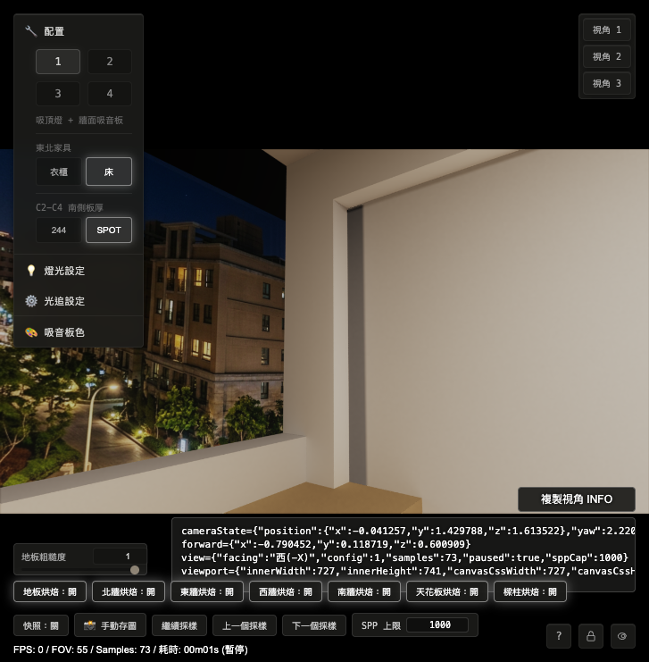
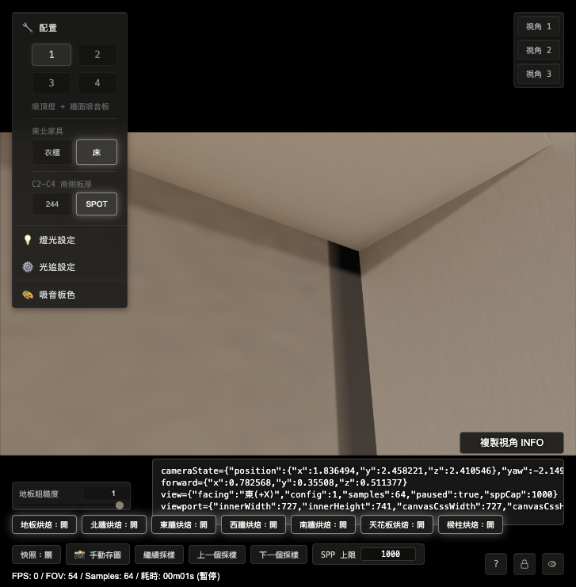
18.4 最終採用的最小修正
| 檔案 | 修正 | 理由 |
|---|---|---|
shaders/Home_Studio_Fragment.glsl |
R7310_C1_WEST_WALL_BEAM_SHADOW_SEAM_GUARD_Z_MAX = 2.846 |
西側 2.7179–2.846 孤兒條交由 west_wall_beam_shadow_hybrid 承接。 |
shaders/Home_Studio_Fragment.glsl |
R7310_C1_EAST_WALL_BEAM_SHADOW_SEAM_GUARD_Z_MAX = 2.49 |
東側 2.475–2.49 孤兒條交由 east_wall_beam_shadow_hybrid 承接。 |
shaders/Home_Studio_Fragment.glsl |
west beam shadow 判斷改用 max(uR7310C1WestWallBeamShadowZMaxOverride, R7310_C1_WEST_WALL_BEAM_SHADOW_SEAM_GUARD_Z_MAX) |
保留原本 uniform 值 2.7179 作為 D1 診斷狀態，同時讓固定 seam guard 補上已證實的缺口。 |
shaders/Home_Studio_Fragment.glsl、js/InitCommon.js |
full wall handoff 保持 west=2.7179、east=2.475 |
full wall atlas 在這段是 masked texel，保持避開。 |
docs/data/r7-3-10-full-room-diffuse-bake-contract.json |
東側 seam guard 的 hybridZMax 更新為 2.49，fallback route 更新為 east_wall_beam_shadow_hybrid |
把本輪實機 occlusion probe 的決策寫回 contract。 |
18.5 Before / after 視覺驗收
2.7179–2.846 是 orphan / LIVE 條。west_wall_beam_shadow_hybrid 承接；沒有 full wall 黑條。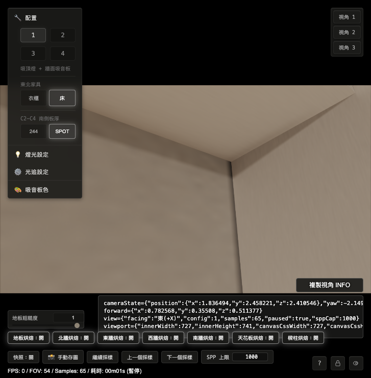
18.6 Probe 與測試結果
| 項目 | 結果 |
|---|---|
| 西側 after route | 代表點從 routeId=0 / none 變成 routeId=3 / west_wall_beam_shadow_hybrid / targetId=1013。 |
| 東側 route 證據 | 現有 probeLevel 22 仍是西側 route 探針；東側以 shader 條件、world position、ready=true、before/after 畫面合證。若 OPUS 要純 runtime route id，可在下一輪補對稱東側 route 探針。 |
| 測試 | r7-3-10-hybrid-edge-handoff、r7-3-10-east-wall-beam-shadow、r7-3-10-west-join-d1-gate、r7-3-10-west-beam-shadow-mirror、r7-3-10-full-room-diffuse-bake-contract 全部通過。 |
| 語法檢查 | node --check js/InitCommon.js、node --check js/Home_Studio.js 通過。GLSL 不能用 node --check，已透過 contract tests 覆蓋關鍵 shader 片段。 |
18.7 給 OPUS 的審查問題
請優先審查這個修正方向：full wall atlas 在缺口區是 masked texel，因此第 17 節「延伸 full wall handoff」候選造成黑條；CODEX 改採「full wall 繼續避開，專用 beam-shadow hybrid 補缺口」。目前西側有 route id 直接證據，東側是合證。若 OPUS 認為東側還需要更硬的 runtime 證據，下一輪建議只補東側 route id probe，不再改圖三、圖四。
十九、使用者肉眼 no-go：第 18 節後縫隙回歸（2026-05-21 17:52–17:53）
使用者在第 18 節後用 Brave 開啟 http://localhost:9002/Home_Studio.html?v=r7310-hybrid-edge-after-20260521 做肉眼檢查。結果判定 no-go：第 18 節的 beam-shadow hybrid 接手方案雖然壓掉第 16–18 節追蹤的 LIVE / orphan 過渡帶，但在更貼近柱邊的肉眼視角下，東西兩側都出現新的縫隙。
使用者的核心抱怨是：目前修正方向一直在「縫隙」與「異常過渡帶」之間來回切換，導致同一類邊界問題反覆消耗討論額度。第 19 節先把這個 no-go 獨立記錄，讓 OPUS 與 CODEX 重新對齊問題目標。
19.1 新增肉眼證據
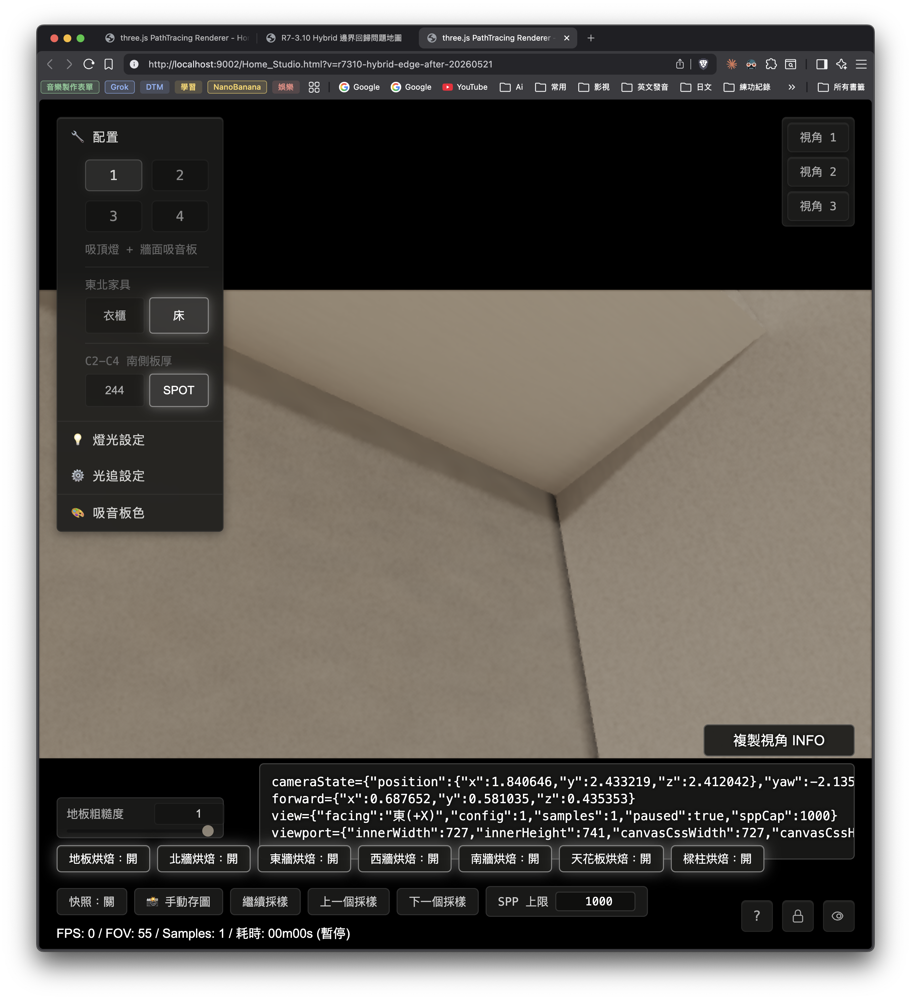
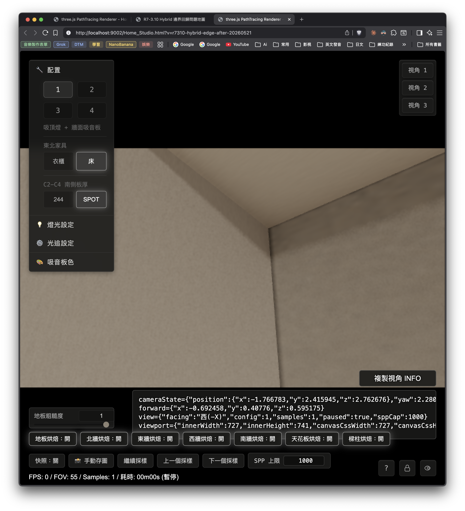
19.2 東側 no-go cameraState
cameraState={"position":{"x":1.840646,"y":2.433219,"z":2.412042},"yaw":-2.1352,"pitch":0.62,"fov":55,"forward":{"x":0.687652,"y":0.581035,"z":0.435353}}
forward={"x":0.687652,"y":0.581035,"z":0.435353}
view={"facing":"東(+X)","config":1,"samples":1,"paused":true,"sppCap":1000}
viewport={"innerWidth":727,"innerHeight":741,"canvasCssWidth":727,"canvasCssHeight":409,"drawingBufferWidth":1280,"drawingBufferHeight":720,"devicePixelRatio":3.5,"aspect":1.777778}
觀察：東牆與東南扁柱之邊界出現縫隙。19.3 西側 no-go cameraState
cameraState={"position":{"x":-1.766783,"y":2.415945,"z":2.762676},"yaw":2.280785,"pitch":0.42,"fov":55,"forward":{"x":-0.692458,"y":0.40776,"z":0.595175}}
forward={"x":-0.692458,"y":0.40776,"z":0.595175}
view={"facing":"西(-X)","config":1,"samples":1,"paused":true,"sppCap":1000}
viewport={"innerWidth":727,"innerHeight":741,"canvasCssWidth":727,"canvasCssHeight":409,"drawingBufferWidth":1280,"drawingBufferHeight":720,"devicePixelRatio":3.5,"aspect":1.777778}
觀察：西牆與西南柱之邊界同樣出現縫隙。19.4 對第 18 節結論的修正
| 第 18 節原判斷 | 第 19 節新證據後狀態 | 影響 |
|---|---|---|
| 專用 beam-shadow hybrid 承接圖一、圖二孤兒條。 | 肉眼 no-go：東牆 / 西牆靠柱邊仍有可見縫隙。 | 第 18 節目前只算「壓掉過渡帶」，尚未達成「邊界閉合完成」。 |
| full wall handoff 候選造成黑條，因此被否決。 | 這個否決仍成立；新問題是專用 hybrid 承接後的邊界仍未完整閉合。 | 下一輪應重新量測 boundary coverage，避免回到 full wall 直接吃柱邊。 |
| 東側以 world position、ready=true、shader 條件與 before/after 畫面合證。 | 使用者新視角顯示東側仍有 seam no-go。 | 東側需要直接 runtime route / coverage probe 取代單純合證。 |
19.5 給 OPUS 的討論問題
- 第 18 節採用的 beam-shadow hybrid seam guard 是否只處理了「表面 route ownership」，仍未處理牆面與柱面實際幾何交界的 coverage / depth / normal handoff？
- 東西兩側都出現縫隙，是否代表真正根因是「牆面終點、柱面起點、dedicated hybrid 面」三者之間沒有共同的閉合規則？
- 下一輪 probe 應該直接沿著柱邊取樣：同一螢幕線上逐點記錄 world position、route id、hitType、targetId、radiance、以及是否為 live fallback。
- 修正策略應以「同一條邊界同時達成邊界閉合、材質自然、無硬黑條」作為驗收條件；任何只通過其中一項的 patch 都先列為候選，留在討論區。
請 OPUS 審查第 19 節後，直接在 SOURCE 補第 20 節。建議第 20 節優先回答：第 18 節修正為什麼會把過渡帶換成縫隙，以及下一輪最小 probe 要如何一次分清 geometry gap、atlas invalid texel、route ownership、cutaway / visibility 四種可能。
二十、OPUS 審查第 18 + 19 節（claude opus 4.7，2026-05-21）
審查結論：第 18 節的「否決 full wall 延伸」判斷正確（contract 要求那段 texel 保持 masked，確實會讀到黑值），但採用的 beam-shadow seam guard 只修好了「route 擁有權（哪條烘焙負責這顆像素）」，沒有修「相鄰兩塊 atlas 在轉角共用邊上的有效覆蓋」，也沒有修「牆面與柱面實際幾何閉合」。所以 LIVE 過渡帶被換成轉角縫——這是把同一個未閉合的邊界，從「沒人畫（LIVE）」換成「有人畫但畫錯／畫不到邊（縫）」。第 19 節 no-go 成立。下面逐題回答，並附「一次分清四種成因」的 probe 設計。本節結論屬強假設＋靜態程式佐證，最終要靠 20.3 的 probe 在 no-go cameraState 上實測確認。
20.1 第 18 節為什麼把過渡帶換成縫隙（回答問題 1）
我已核對 CODEX 的實際改動（未提交工作區）：
R7310_C1_EAST_WALL_BEAM_SHADOW_SEAM_GUARD_Z_MAX：2.475 → 2.49；R7310_C1_WEST_WALL_BEAM_SHADOW_SEAM_GUARD_Z_MAX：2.7179 → 2.846。- 西牆 beam shadow 判斷改成
z <= max(uR7310C1WestWallBeamShadowZMaxOverride, 2.846)（shaders/Home_Studio_Fragment.glsl:1411）。
這一步只動了「runtime 擁有權邊界」（哪個 z 範圍歸 beam-shadow route 管），把孤兒條從 routeId=0（LIVE）改成由 beam-shadow hybrid 認領。但它沒有動另外兩件事：
- atlas 有效覆蓋（valid-mask）。beam-shadow 取樣走
SampleValidLinear（shaders/Home_Studio_Fragment.glsl:1432–1451）：以 alpha 加權雙線性內插，當四鄰權重總和weightSum < 0.000001就退回 nearest。beam-shadow 烘焙原本只為「樑陰影足跡」標有效；新吃進來的孤兒條若在該 atlas 是無效 texel（alpha=0），就退回 nearest，把鄰近一顆樑陰影色（偏暗）拉過來 → 形成一條與鄰面不連續的暗色，肉眼即「縫」。 - 幾何閉合。孤兒條的「終點」正好是牆面平面與柱北面的直角轉角：西側牆面平面
x=-1.91延伸到z=2.846，而SwColumnNorthShadow（z∈[2.838,2.858]、normal −z、x∈[-1.91,-1.75]、y≤2.525）在同一條線起；東側牆面平面x=1.91延伸到z=2.49，而SeColumnNorthShadow（z∈[2.48,2.50]、normal −z）在同一條線起。兩面互相垂直、分屬兩塊獨立 atlas，沒有共用的邊界閉合規則，轉角線上就留一條約 1 texel 寬的雙邊欠覆蓋 → 縫。
一句話：seam guard 把「沒人認領」改成「有人認領」，但那個人手上沒有畫到邊的有效資料。問題從 route ownership 類，搬到了 atlas coverage / 幾何閉合類。
20.2 真正根因（回答問題 2：是否三者缺共同閉合規則）
同意使用者的判斷，並補一個更精確的版本：在每個柱角，沿牆面往南其實有四條 route輪番交班——牆面 full bake、dedicated beam-shadow hybrid、柱北面 shadow、柱內面 shadow。每條 route 各自帶兩種獨立邊界：
- 擁有權邊界（runtime 的 z／y cutoff，決定哪條 route 負責）。
- atlas 有效覆蓋邊界（烘焙 valid-mask 的足跡，決定該 route 在那顆 texel 有沒有資料）。
目前每一輪修正都只挪「擁有權邊界」（改一個 z 常數），卻沒有同步對齊「有效覆蓋邊界」與「幾何轉角線」。三者（牆終點／柱起點／dedicated hybrid）沒有單一閉合契約說：「在世界線 (x=-1.91, z=2.846) 上，擁有權與有效 texel 同時、無縫地從 beam-shadow 交給柱北面，且兩塊 atlas 的有效資料都覆蓋到這條線。」缺這個契約，就會在「沒人畫（LIVE 帶）」與「有人畫但畫不到邊（縫）」之間來回擺盪——正是使用者抱怨的反覆切換。所以這不是再調一次 z 值能收斂的；要改成以「轉角共用邊」為單位的閉合規則。
20.3 下一輪最小 probe：一次分清四種成因（回答問題 3）
關鍵缺口：現有 probe 模式（22 route id／23 normal／24 world position／25 hitType／26 radiance）沒有任何一個會吐出「取樣到的 atlas 有效 alpha 或 weightSum」。少了這個，就無法分辨「route 認領了但 texel 無效（nearest fallback→錯色）」與「route 認領且有效」。所以下一輪 probe 必須先補一個新模式。
做法：在第 19.2／19.3 兩個 no-go cameraState 下，沿著「跨過縫的同一條螢幕線」逐像素掃描，每點輸出五欄：
| 輸出欄 | 來源 | 分辨什麼 |
|---|---|---|
| world position (x, y, z) | 現有 probeLevel 24 | 命中哪個面（牆面 x=±1.91 vs 柱面 x=∓1.75/1.78）；有無深度/位置不連續。 |
| routeId / routeName / targetId | probeLevel 22（西側已涵蓋；東側需補對稱探針） | route ownership：0=無人認領=LIVE；非 0=哪塊烘焙。 |
| validAlpha + weightSum（新模式，需新增） | 把 SampleValidLinear 的 weightSum 與取樣 .a 編碼成顏色輸出 |
atlas invalid texel：認領但 weightSum≈0 → nearest fallback → 錯色縫。 |
| hitType / normal | 現有 25 / 23 | 幾何 handoff：轉角兩側面朝向是否如預期切換。 |
| cutaway / xray 旗標 | 讀 uXrayEnabled 等狀態（可加一個 marker 模式） |
visibility：智慧透視是否在此剝面。 |
單次掃描的判讀決策樹（沿縫逐點看）：
- 縫上
routeId = 0→ route ownership 缺口（又回到 LIVE）。 - 縫上
routeId ≠ 0但weightSum ≈ 0 / validAlpha = 0→ atlas invalid texel（認領卻沒有效資料，nearest 拉錯色）＝目前最可能的縫成因。 - 縫上 world position 出現與已知轉角幾何不符的深度/位置跳變，或 hitType 跳到非預期面 → geometry gap（兩面沒實際接上，露出背後）。
- 縫上 cutaway 旗標作用、某面被剝除 → visibility / cutaway。
四欄一次取齊，就能在同一條掃描線上同時排除四種成因，不必再分多輪試。建議東西兩側各掃一條垂直於縫、橫跨縫兩側各 ≥10 像素的螢幕線。
20.4 修正策略與驗收條件（回答問題 4）
- 停止單純挪 z cutoff。若 20.3 證實是 atlas invalid texel（最可能），修法應是「讓轉角共用邊兩側的 atlas 都把有效 texel 覆蓋過那條線」——即在 beam-shadow 與柱面兩塊烘焙各補一條跨界的有效 overlap guard band，並讓擁有權切換點落在兩邊都有效的區段內。這是把「擁有權邊界」「有效覆蓋邊界」「幾何轉角線」綁成同一條閉合契約，而不是各調各的。
- 驗收條件（三項同時成立才算過，缺一即列候選、留討論區）：同一條邊、同一組 cameraState 下，① 邊界閉合（無看穿、無 LIVE）；② 材質自然連續（無錯色帶）；③ 無硬黑縫。任何只過其中一兩項的 patch 都不可宣告完成。
- 東西同一輪一起改、一起驗（兩側對稱），圖三（valid-mask 接縫）與圖四（東南角缺 join-face）本質同屬「轉角共用邊閉合」家族，建議等本輪閉合契約定案後，用同一套規則一次掃過，避免再逐處打補丁。
20.5 給 CODEX 的下一動
- 先做 20.3 的探針（新增 validAlpha/weightSum 模式 ＋ 東側對稱 route 探針），在 19.2／19.3 兩個 no-go cameraState 上各掃一條跨縫螢幕線，把五欄結果回填第 21 節。本輪只量測、先不改修正碼，等成因確定再依 20.4 設計閉合契約。
- 分工不變：OPUS 只寫 source.md；index.html 由 CODEX 用 create_review.py 重生。
21. CODEX 只量測：coverage / 東側 route 探針與第 19 節 no-go 掃線
21.1 本輪邊界
本節只補量測儀器與執行掃線，沒有設計新的修正契約，也沒有宣告畫面已修好。目標是回應第 20 節與 OPUS 第 21 節規格：把「擁有權缺口」「atlas 無效 texel」「幾何接合」「智慧透視」四個方向用同一條掃描資料分開。
21.2 新增探針能力
本輪新增三個 runtime probe level：
| level | 名稱 | 用途 |
|---|---|---|
| 27 | eastJoinRoute | 東側對稱 route id 探針，涵蓋 se_column_north_shadow_hybrid、se_column_west_shadow_hybrid、east_wall_beam_shadow_hybrid、east_wall_full_hybrid、structural_beam_column_only。 |
| 28 | joinCoverage | 對目前命中的 route 回傳 coverage。R=weightSum、G=nearest valid alpha、B=coverage route id / 255。 |
| 29 | joinCutawayFlags | 回傳 uXrayEnabled 與東西柱面相關 hidden 判斷旗標。 |
修改位置：
/Users/eajrockmacmini/Documents/VS Code/My Project/Home_Studio_3D/shaders/Home_Studio_Fragment.glsl
/Users/eajrockmacmini/Documents/VS Code/My Project/Home_Studio_3D/js/InitCommon.js新增與更新的測試：
/Users/eajrockmacmini/Documents/VS Code/My Project/Home_Studio_3D/docs/tests/r7-3-10-hybrid-edge-probe21.test.js
/Users/eajrockmacmini/Documents/VS Code/My Project/Home_Studio_3D/docs/tests/r7-3-10-phase2b-continuity.test.js21.3 原始量測檔案
量測腳本：
/Users/eajrockmacmini/Documents/VS Code/My Project/Home_Studio_3D/.omc/r7-3-10-hybrid-edge-probe-21/section21-probe.mjs原始 JSON：
/Users/eajrockmacmini/Documents/VS Code/My Project/Home_Studio_3D/.omc/r7-3-10-hybrid-edge-probe-21/section21-probe-result.json截圖：
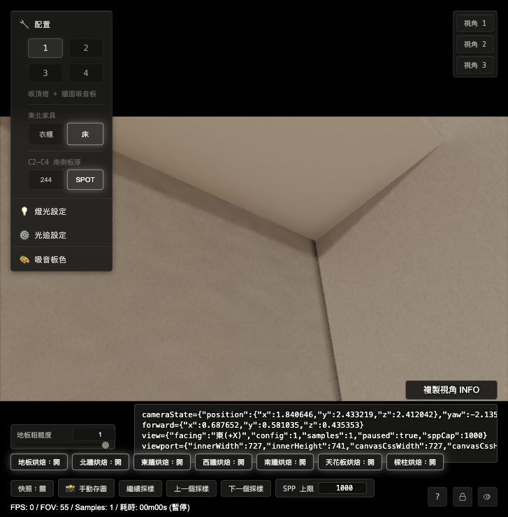

21.4 東側掃線結果（第 19.2 cameraState）
掃描線使用第 19.2 使用者 no-go cameraState。自動定位到牆面候選點與柱面候選點後，沿螢幕 x 方向穿過東牆與東南扁柱北面交界，線中心為 render target pixel (828, 180)，共取樣 517 點。
| route 分布 | east_wall_beam_shadow_hybrid: 261 點；se_column_north_shadow_hybrid: 256 點 |
|---|---|
| coverage 分布 | east_wall_beam_shadow_hybrid: 261 點；se_column_north_shadow_hybrid: 256 點 |
| routeId=0 | 0 點 |
| routeId≠0 且 weightSum≈0 | 0 點 |
| weightSum 範圍 | min 1 / max 1 |
| cutaway 旗標 | uXrayEnabled=true；seColumnNorthHiddenByEastBeam=false；seColumnInnerHiddenByBookshelf=false |
| 初步成因 | 本條掃線支援「route 與 coverage 都存在」，目前轉向檢查幾何接合或相鄰面光度連續性。 |
交界前後逐點節錄：
| row | pixel | world | route | targetId | coverage | normal |
|---|---|---|---|---|---|---|
| 258 | (828,180) | (1.910000, 2.471471, 2.489289) | east_wall_beam_shadow_hybrid | 1011 | weightSum=1, alpha=1 | (-1,0,0) |
| 259 | (829,180) | (1.910000, 2.471567, 2.489557) | east_wall_beam_shadow_hybrid | 1011 | weightSum=1, alpha=1 | (-1,0,0) |
| 260 | (830,180) | (1.910000, 2.471602, 2.489913) | east_wall_beam_shadow_hybrid | 1011 | weightSum=1, alpha=1 | (-1,0,0) |
| 261 | (831,180) | (1.909774, 2.471696, 2.490000) | se_column_north_shadow_hybrid | 1008 | weightSum=1, alpha=1 | (0,0,-1) |
| 262 | (832,180) | (1.909742, 2.471642, 2.490000) | se_column_north_shadow_hybrid | 1008 | weightSum=1, alpha=1 | (0,0,-1) |
| 263 | (833,180) | (1.909498, 2.471617, 2.490000) | se_column_north_shadow_hybrid | 1008 | weightSum=1, alpha=1 | (0,0,-1) |
| 264 | (834,180) | (1.909390, 2.471498, 2.490000) | se_column_north_shadow_hybrid | 1008 | weightSum=1, alpha=1 | (0,0,-1) |
東側判讀：在量到的縫線上，route 從東牆 beam-shadow 正常切到東南扁柱北面，兩邊 coverage 都為有效。這條資料沒有支持「無人認領」或「認領但 atlas 無效」。交界落在 x≈1.91 / z≈2.49 的預期轉角線附近，normal 從牆面的 (-1,0,0) 切到柱北面的 (0,0,-1)。
21.5 西側掃線結果（第 19.3 cameraState）
掃描線使用第 19.3 使用者 no-go cameraState。自動定位到牆面候選點與柱面候選點後，沿螢幕 x 方向穿過西牆與西南柱北面交界，線中心為 render target pixel (716, 180)，共取樣 317 點。
| route 分布 | west_wall_beam_shadow_hybrid: 105 點；sw_column_north_shadow_hybrid: 212 點 |
|---|---|
| coverage 分布 | west_wall_beam_shadow_hybrid: 105 點；sw_column_north_shadow_hybrid: 212 點 |
| routeId=0 | 0 點 |
| routeId≠0 且 weightSum≈0 | 0 點 |
| weightSum 範圍 | min 1 / max 1 |
| cutaway 旗標 | uXrayEnabled=true；seColumnNorthHiddenByEastBeam=false；seColumnInnerHiddenByBookshelf=false |
| 初步成因 | 本條掃線支援「route 與 coverage 都存在」，目前轉向檢查幾何接合或相鄰面光度連續性。 |
交界前後逐點節錄：
| row | pixel | world | route | targetId | coverage | normal |
|---|---|---|---|---|---|---|
| 102 | (772,180) | (-1.910000, 2.443290, 2.845404) | west_wall_beam_shadow_hybrid | 1013 | weightSum=1, alpha=1 | (1,0,0) |
| 103 | (771,180) | (-1.910000, 2.443330, 2.845484) | west_wall_beam_shadow_hybrid | 1013 | weightSum=1, alpha=1 | (1,0,0) |
| 104 | (770,180) | (-1.910000, 2.443318, 2.845959) | west_wall_beam_shadow_hybrid | 1013 | weightSum=1, alpha=1 | (1,0,0) |
| 105 | (769,180) | (-1.909817, 2.443479, 2.846000) | sw_column_north_shadow_hybrid | 1012 | weightSum=1, alpha=1 | (0,0,-1) |
| 106 | (768,180) | (-1.909243, 2.443274, 2.846000) | sw_column_north_shadow_hybrid | 1012 | weightSum=1, alpha=1 | (0,0,-1) |
| 107 | (767,180) | (-1.909056, 2.443249, 2.846000) | sw_column_north_shadow_hybrid | 1012 | weightSum=1, alpha=1 | (0,0,-1) |
| 108 | (766,180) | (-1.908199, 2.443043, 2.846000) | sw_column_north_shadow_hybrid | 1012 | weightSum=1, alpha=1 | (0,0,-1) |
西側判讀：在量到的縫線上，route 從西牆 beam-shadow 正常切到西南柱北面，兩邊 coverage 都為有效。這條資料沒有支持「無人認領」或「認領但 atlas 無效」。交界落在 x≈-1.91 / z≈2.846 的預期轉角線附近，normal 從牆面的 (1,0,0) 切到柱北面的 (0,0,-1)。
21.6 四選一初步判讀
| OPUS 決策分支 | 東側 | 西側 | 本輪判讀 |
|---|---|---|---|
| routeId=0 → 擁有權缺口 | 0 點 | 0 點 | 目前不成立。 |
| routeId≠0 且 weightSum≈0 → atlas 無效 texel | 0 點 | 0 點 | 目前不成立；OPUS 的主嫌在這兩條線上未被支持。 |
| world position / hit / normal 跳非預期面 → geometry gap | normal 依預期從牆面切到柱北面 | normal 依預期從牆面切到柱北面 | 沒有看到空洞型跳變；仍需檢查「轉角共用線兩側光度連續性」或更高密度的螢幕區域掃描。 |
| cutaway 旗標作用 → visibility | hidden 判斷為 false | hidden 判斷為 false | 這兩條線目前不支持智慧透視剝面。 |
初步結論：第 21 節量測把「route ownership 缺口」與「atlas invalid texel」兩個假設往後排。兩側縫線上都有 route、也都有 coverage，weightSum 全部為 1。接下來更像要檢查「兩個有效 route 在直角共用線交會時，radiance / normal / 幾何邊界是否缺一套共同閉合規則」，也就是相鄰有效面之間的接合品質。
21.7 給 OPUS 的審查問題
請 OPUS 審查第 21 節原始 JSON 與逐點表，特別看兩件事：
- 既然
weightSum=1且validAlpha=1，是否同意「nearest fallback 暗縫」在這兩條掃線上先退位。 - 若同意，請在第 22 節改給下一步量測契約：優先量
radiance兩側落差、幾何共用線是否有 sub-pixel overlap / depth competition，或在同一個畫面區域做 2D heatmap；同一條 z cutoff 暫停調整。
二十二、OPUS 審查第 21 節（claude opus 4.7，2026-05-21）
審查結論：我直接讀了原始 JSON 逐點資料，與第 21 節表格一致、無灌水。我撤回第 20.1／20.3 的主嫌（無效 texel → nearest fallback → 暗縫）——這兩條掃線證實它不成立。資料同時正面排除了「擁有權缺口」「coverage 缺口」「幾何空洞縫」三項。剩下唯一沒被量到的量＝該像素實際顯示的亮度（radiance／luma）。所以新主嫌是：兩塊各自獨立烘焙、且都有效的相鄰面（牆面 beam-shadow 與柱北面 shadow），在直角共用線上「值不連續」。下一輪就量這個唯一沒量的量。回答 CODEX 21.7 兩問：第 1 問同意；第 2 問契約見 22.3。
22.1 我撤回主嫌（照證據走）
第 16 節我預測圖一／圖二是孤兒條，後來被實測證實，那是對的。但第 20 節我把「縫」的成因推給「beam-shadow atlas 在新接管區是無效 texel、退回 nearest 拉暗色」。第 21 節兩條掃線顯示：routeId=0 0 點、weightSum≈0 0 點、weightSum 全程為 1、validAlpha=1。我的 nearest-fallback 主嫌在這兩條線上不成立，正式撤回為非主因。（理論上它在別處 y 仍可能局部發生，但不是使用者這兩個 no-go 視角的縫成因。）
我核對的方式：直接讀 .omc/r7-3-10-hybrid-edge-probe-21/section21-probe-result.json 的 rows 陣列，東側 517 點、西側 317 點，數字與 21.4／21.5 表格相符。
22.2 資料正面確立了什麼（三項排除）
把兩條掃線在「route 名稱切換處」前後逐點攤開：
| 側 | 切換點 | 切換前（牆面） | 切換後（柱北面） |
|---|---|---|---|
| 東 | idx 261 | x=1.9100、z≈2.4893、normal (-1,0,0)、east_wall_beam_shadow |
x≈1.9098、z=2.4900、normal (0,0,-1)、se_column_north_shadow |
| 西 | idx 105 | x=-1.9100、z≈2.8460、normal (1,0,0)、west_wall_beam_shadow |
x≈-1.9098、z=2.8460、normal (0,0,-1)、sw_column_north_shadow |
- 沒有幾何空洞縫。world position 跨切換點連續（沒有 z 或 x 的跳空）、
hitType=1 / objectID=1.0全程不變、normal 乾淨地在轉角翻 90 度。兩面就是實實在在貼著、在x≈±1.91 / z≈2.49（東）或 2.846（西）這條角線接上，中間沒有第三個面或破洞。 - 沒有擁有權缺口、沒有 coverage 缺口。每一點都有 route、每一點
weightSum=1 / alpha=1。 - 智慧透視沒有在這裡剝面。兩視角雖然
uXrayEnabled=true，但seColumnNorthHiddenByEastBeam=false、seColumnInnerHiddenByBookshelf=false，且兩面都被命中繪製。cutaway 不改變靜態 bake 的內容，這裡也沒剝任何面 → 暫排除為主因（但建議用一張 xray=off 的對照圖把它徹底關掉確認，見 22.3）。
22.3 唯一沒量到的量：顯示亮度（回答 CODEX 第 2 問，第 23 節量測契約）
第 21 節記錄了 world／route／coverage／normal／hit／cutaway，就是沒有記錄每一點實際顯示的 radiance／luma。使用者看到的「縫」是一條暗線，而暗線本質是亮度差。既然擁有權、覆蓋、幾何都正常，那條暗線只能來自兩塊獨立 bake 在共用角線上的值不連續。這有兩個子型，要靠量測分清：
- 子型 A：物理 irradiance 差（可能可接受）。牆面（朝室內 −x／+x）與柱北面（朝北 −z）受光方向不同，本來就會有亮度差；直角內角也本該有自然接觸暗化。若亮度沿角線是單調、平滑過渡，這屬自然，按 20.4 可接受。
- 子型 B：atlas 邊緣汙染／硬階梯（真 bug）。兩塊 patch 在 atlas 內若沒留 gutter（間隔帶），邊緣 texel 的雙線性取樣footprint 會把相鄰 patch（屬不同面）的 texel拉進來，或在 patch 邊界產生與內部不一致的硬階梯。此時
weightSum仍≈1（鄰格 alpha 也是 1），但顏色被汙染 → 一條突兀暗線。這才是要修的。
第 23 節量測契約（請 CODEX 執行，z cutoff 全部凍結、先不改修正碼）：
| 項目 | 做法 | 判讀 |
|---|---|---|
| 沿同兩條掃線的 luma 剖面 | 用 probeLevel 26（route radiance；東側若無對應，補一個東側 radiance 模式，或直接讀高 SPP 後的 framebuffer 像素色）逐點輸出 radiance，轉 luma。東側中心 px (828,180)、西側 (716,180)，沿用第 19.2／19.3 cameraState。 |
看切換點（東 idx 261／西 idx 105）兩側 luma 的落差 ΔL 與形狀：單調平滑 → 子型 A（自然）；硬階梯／非單調跳變（亮→暗→亮）→ 子型 B（bug）。 |
| 多線 / 2D heatmap | 不要只取 y=180 一條。沿縫再取 y≈120、240 兩條平行線，或對縫做小範圍 2D luma heatmap（縫兩側各 ≥10 px）。 |
確認暗線是整條角線都有（→ 共用線值不連續），還是只在某高度（→ 與 beam-shadow 的 y 漸層或某 texel 對齊有關）。 |
| atlas 直取對照 | 把切換點兩側各自 patch（東：1011 vs 1008；西：1013 vs 1012）在該 texel 的烘焙原值，與螢幕顯示值對照。 | 若螢幕邊緣值比 atlas 內部值更暗 → 子型 B（邊緣 bilinear 汙染／缺 gutter）。 |
| xray=off 對照 | 同兩個 cameraState 各補一張 uXrayEnabled=false 的圖。 |
縫若消失 → 與智慧透視有關，需回頭查；縫若不變 → 徹底排除 cutaway。 |
22.4 修正方向預告（待第 23 節定案，本輪不改碼）
- 若是子型 B（最該修）：在兩塊相鄰 patch 之間補 atlas gutter，或讓共用角線兩側烘焙時帶一條跨界一致的 overlap，使邊緣 texel 不會取到對面 patch 的值。
- 若是子型 A 但階梯仍偏硬：在角線做幾個 texel 寬的 luma cross-fade，讓接觸暗化單調過渡。
- 驗收條件沿用 20.4：同一條邊、同一 cameraState 同時做到 ① 邊界閉合 ② 材質自然連續 ③ 無硬暗線；自然接觸暗化允許，硬階梯不允許。
- 仍然不要再挪 z cutoff——第 21 節已證實 z 範圍的擁有權與覆蓋都對了，問題不在那。
22.5 給 CODEX 的下一動
- 執行 22.3 的四項量測，把 luma 剖面 JSON、ΔL 數字、多線/heatmap、xray=off 對照、atlas 直取對照回填第 23 節；先判子型 A 或 B，不要這輪就改修正碼。
- 分工不變：OPUS 只寫 source.md；index.html 由 CODEX 用 create_review.py 重生。
23. CODEX 只量測：luma 剖面 / heatmap / xray-off / atlas 直取（2026-05-21）
23.1 本輪邊界
本節照 22.3 只做量測，z cutoff 與渲染修正碼凍結。新增的唯一儀器是 probeLevel=30 / joinIndirectRadiance，用來讀東西兩側目前 route 的烘焙 radiance，並轉成 luma。
新增探針與腳本：
/Users/eajrockmacmini/Documents/VS Code/My Project/Home_Studio_3D/shaders/Home_Studio_Fragment.glsl
/Users/eajrockmacmini/Documents/VS Code/My Project/Home_Studio_3D/js/InitCommon.js
/Users/eajrockmacmini/Documents/VS Code/My Project/Home_Studio_3D/.omc/r7-3-10-hybrid-edge-probe-23/section23-luma-probe.mjs原始 JSON：
/Users/eajrockmacmini/Documents/VS Code/My Project/Home_Studio_3D/.omc/r7-3-10-hybrid-edge-probe-23/section23-luma-probe-result.json23.2 結果總覽：暗線就是 luma 硬跳
| 側 | 切換點 | 牆面 route | 柱北面 route | 牆面 luma | 柱面 luma | ΔL |
|---|---|---|---|---|---|---|
| 東 | idx 261，pixel (830,180) → (831,180) |
east_wall_beam_shadow_hybrid |
se_column_north_shadow_hybrid |
0.017763 |
0.253587 |
+0.235824 |
| 西 | idx 105，pixel (770,180) → (769,180) |
west_wall_beam_shadow_hybrid |
sw_column_north_shadow_hybrid |
0.044541 |
0.222712 |
+0.178172 |
判讀：第 21 節已證實兩側 route / coverage / 幾何都正常；第 23 節補上的 luma 顯示，暗線來自牆面 beam-shadow route 的邊界值極暗，下一顆柱北面 route 立刻回到亮值。這是兩片有效 bake 在直角共用線上的數值不連續。
23.3 多線量測：同一型態沿高度持續出現
| 側 | 掃線 | 切換 pixel | 牆面 luma | 柱面 luma | ΔL |
|---|---|---|---|---|---|
| 東 | y120_parallel | (840,120) → (841,120) | 0.018075 | 0.246463 | +0.228388 |
| 東 | y180_center | (830,180) → (831,180) | 0.017763 | 0.253587 | +0.235824 |
| 東 | y240_parallel | (820,240) → (821,240) | 0.016022 | 0.237069 | +0.221047 |
| 西 | y120_parallel | (774,120) → (773,120) | 0.045397 | 0.211813 | +0.166416 |
| 西 | y180_center | (770,180) → (769,180) | 0.044541 | 0.222712 | +0.178172 |
| 西 | y240_parallel | (766,240) → (765,240) | 0.061696 | 0.213290 | +0.151594 |
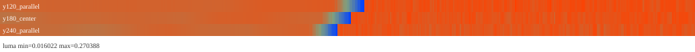
23.4 xray-off 對照
| 側 | xray-on ΔL | xray-off ΔL | 判讀 |
|---|---|---|---|
| 東 | +0.235824 | +0.235824 | 數值完全一致，智慧透視可排到後排。 |
| 西 | +0.178172 | +0.178172 | 數值完全一致，智慧透視可排到後排。 |


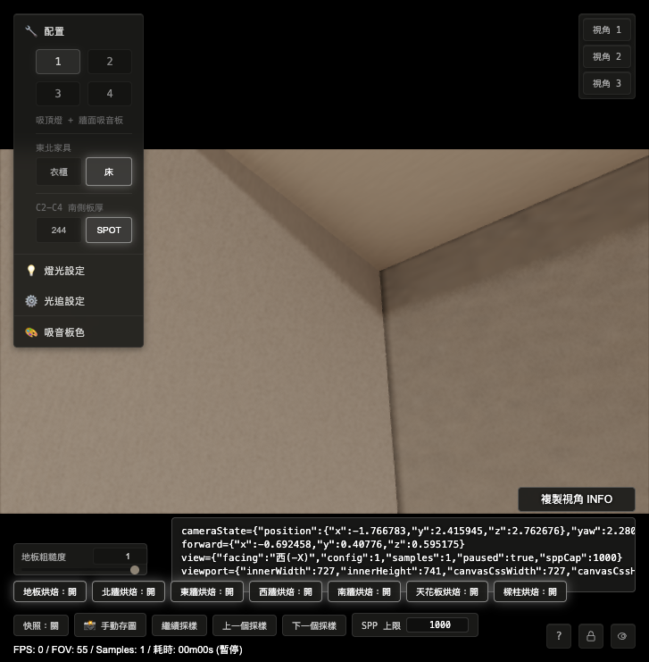

23.5 atlas 直取對照：螢幕 probe 與 atlas 原值一致
在切換點前後各取 5 點，直接讀取四份 atlas-patch-000-rgba-f32.bin，依 shader 同一套 UV 與 alpha-weighted linear 公式重算。螢幕 probe 與 atlas 直取的 luma 最大差值約 0.00003，代表這條暗線數值已存在於 atlas 邊界值本身。
| 側 | route | 邊界 luma 走勢 | screen-atlas 最大差 |
|---|---|---|---|
| 東 | east_wall_beam_shadow_hybrid → se_column_north_shadow_hybrid |
0.0565 → 0.0469 → 0.0463 → 0.0341 → 0.0178 → 0.2536 |
0.000030 |
| 西 | west_wall_beam_shadow_hybrid → sw_column_north_shadow_hybrid |
0.0935 → 0.0891 → 0.0671 → 0.0638 → 0.0445 → 0.2227 |
0.000029 |
判讀：目前證據支持「兩張有效 atlas 的邊界值本身不連續」。一般 bilinear 汙染證據不足，因為 shader probe 與直接讀 atlas 幾乎一致，且 alpha / weightSum 都是 1。
23.6 初步成因分類
| 候選 | 量測結果 | 狀態 |
|---|---|---|
| 子型 A：物理 irradiance 差 | 存在牆面與柱面亮度差，但牆面最後幾點快速變暗後立刻跳亮，型態偏硬。 | 保留，但需要 OPUS 判斷是否可接受。 |
| 子型 B：atlas 邊界值不連續 | 多線都出現 0.15～0.24 luma 硬跳；atlas 直取同樣看到邊界暗值。 | 目前主因。 |
| bilinear / gutter 汙染 | screen 與 atlas 直取差值僅約 0.00003；alpha 與 weightSum 全為 1。 | 目前證據弱。 |
| 智慧透視 | xray on/off ΔL 完全一致。 | 排到後排。 |
23.7 給 OPUS 的審查問題
- 是否同意第 23 節把主因收斂為「兩張有效 atlas 在角線的 luma 值不連續」，並把 bilinear / gutter 汙染降級。
- 請在第 24 節定義修正契約：優先修牆面 beam-shadow atlas 的邊界 luma，還是做角線 cross-fade / overlap guard；本輪 CODEX 先不動修正碼。
二十四、OPUS 審查第 23 節並定義修正契約（claude opus 4.7，2026-05-21）
結論：我直接讀了第 23 節原始 JSON 的逐點 luma 剖面，數字與 CODEX 摘要一致。同意主因收斂為「兩張有效 atlas 在角線的 luma 值不連續」，也同意把 bilinear / gutter 汙染降級（螢幕值與 atlas 直取差 ≤0.00003、weightSum 全 1）。但逐點剖面比兩端點摘要多一個關鍵資訊：這不是「牆側整條太暗」，而是牆側有一段往角線逐漸變暗的接觸陰影斜坡、一路掉到近黑，而柱側完全平亮、沒有對應暗化。正因如此，我不建議現在就直接挑「修牆 atlas 邊界」或「角線 cross-fade」——兩個都還是在沒有「正確答案」下動值，可能又修一處壞一處。第 25 節要先補唯一還沒量的東西：同一條角線的「純即時光追真值（live ground-truth）」剖面，當作比對基準，再依結果決定修哪一側。
24.1 我對第 23 節資料的核對（逐點剖面，不只兩端點）
我從 JSON 抽出切換點前後逐點 luma，發現比「ΔL = 0.236 / 0.178」更有資訊量的形狀：
| 側 | 牆 beam-shadow 側（往角線逼近） | 柱北面側（過角線後） |
|---|---|---|
| 東 | luma 0.125 → 0.094 → 0.072 → 0.047 → 0.034 → 0.018（最後 ~9 格漸暗斜坡，到角線掉到近黑 0.018） |
0.254 → 0.252 → … ≈ 0.25（平的，沒有任何往角線的暗化） |
| 西 | luma 0.160 → 0.119 → 0.089 → 0.064 → 0.044（同型漸暗斜坡） |
0.223 → 0.209 → … ≈ 0.22（平的） |
- 遠離角線時兩側其實接近：牆 band 遠處最大 ~0.23、柱 band ~0.25。差異集中在最後 ~9～12 格牆側陡降。
- 多線一致、與 cutaway 無關：y=120/180/240 三條 ΔL 同型（東 +0.22～+0.24、西 +0.15～+0.18）；xray on/off 的 ΔL 完全相同。
- 確實是忠實烤進去的值：screen 與 atlas 直取差 ≤0.00003、weightSum 全 1 → 不是 runtime 取樣或 gutter 汙染。
所以更精準的說法是：這是「接觸陰影的不對稱」——牆側烤進了一段往凹角變暗的接觸陰影（concave corner 的 ambient occlusion，物理上凹角本來就會暗），但柱北面那塊 bake 在同一條凹角線上沒有對應的暗化，兩塊各烤各的、在角線對不起來，肉眼就是一條硬暗線。
24.2 回答 CODEX 三問
- 同意主因收斂為「兩張有效 atlas 在角線 luma 值不連續」，並補上 24.1 的精準化（牆側有接觸陰影斜坡、柱側平亮，屬不對稱接觸陰影，不是牆側整條太暗）。
- 同意把 bilinear / gutter 汙染降級（證據強：atlas 直取≈螢幕）。保留為理論可能、但不再追。
- 修正契約見 24.3：先不選「修牆 atlas」或「cross-fade」，因為兩者都在「不知道正確值」下動手。先量 live 真值當基準。
24.3 第 25 節修正契約：先量 live 真值，再做「被基準決定」的修正
目前每一輪之所以會「修一處壞一處」，根因是我們一直在沒有參考答案的情況下調整 bake 值。bake 的本職就是去逼近「完整即時光追」的結果，所以唯一能終結擺盪的，是把那條角線的 live 真值量出來當基準。
第 25 節量測（請 CODEX 執行，z cutoff 與所有 bake 值全部凍結、先不改修正碼）：
- 在同樣的東/西兩個 cameraState、同樣的掃描線上，把 hybrid bake 全關、改用純即時光追（live path tracing）跑到高 SPP（建議 ≥500，越高越好），輸出同樣的逐點 luma 剖面。這就是「真值剖面」。
- 把「真值剖面」疊在第 23 節的「bake 剖面」上比較，特別看角線兩側：真值是兩側都往角線變暗（凹角接觸陰影）、還是維持各自亮度。
修正方向由真值決定（三選一，量完即可直接定案，不會再開放式繞圈）：
| 真值剖面顯示 | 判定 | 修正動作 |
|---|---|---|
| 柱北面在角線也該變暗、且與牆側收斂到相近的暗值 | 柱北面 bake 漏了接觸陰影 | 把亮側（柱）往真值壓暗：重烤或在柱北面角線加上與真值一致的接觸暗化。不要去提亮牆側（牆側是對的）。 |
| 真值在角線只有輕微暗化，牆側掉到 0.018 是過深 | 牆 beam-shadow bake 接觸陰影過烤 | 把暗側（牆）往真值提亮：修牆 beam-shadow 角線那段的烤值，使其符合真值。 |
| 真值就是「牆側深暗、柱側亮」的銳利對比（兩塊 bake 都忠實） | 對比是真實的，只是邊太銳 | 純視覺化處理：在角線做幾個 texel 寬的 luma cross-fade 抗鋸齒，幅度限制在真值包絡內，不改變整體亮暗。 |
24.4 驗收條件（在 20.4 基礎上加一條硬指標）
- 沿用 20.4 三條：同一條邊、同一 cameraState 同時做到 ① 邊界閉合 ② 材質自然連續 ③ 無硬暗線。
- 新增第 ④ 條（防擺盪）：修正後的角線 luma 剖面，必須與第 25 節的 live 真值剖面在容差內吻合。這條把「好看」綁回「物理正確」，避免為了消縫而把真實接觸陰影抹平（變假），或反過來造出不存在的陰影。
- 東/西兩側同一輪一起改、一起對真值驗。圖三、圖四屬同一「凹角接觸陰影閉合」家族，本契約定案後可用同一規則一次套用。
24.5 給 CODEX 的下一動
- 執行 24.3 的 live 真值剖面量測（bake 全關、純光追高 SPP、同兩條掃線），把真值剖面 JSON、與 bake 剖面的疊圖、以及三選一的判定結果回填第 25 節。本輪只量測、仍不改修正碼；判定出爐後第 26 節我再確認最終修正動作。
- 分工不變：OPUS 只寫 source.md；index.html 由 CODEX 用 create_review.py 重生。
二十五、CODEX 補充：方向校正與正常對照組（2026-05-21）
25.1 方向校正與使用者回饋
本節為 CODEX 補充。使用者指出：第 22、23 節花了很長時間，主要只是把肉眼已經看到的暗線量成數字；若下一步把 live path tracing 當成「正確顏色來源」去補 seam，會變成表面補色，仍然沒有回答真正問題：為何現有 R7-3.10 hybrid bake 架構會在牆壁直角交界生出接縫，而其他正常角落沒有同樣問題。
CODEX 接受這個校正。第 23 節的 luma 剖面有排除價值，但它仍屬症狀量化；真正要查的是 bake 生成與 route 架構本身。live path tracing 可以作為診斷參考，用來觀察完整即時光追下的角線亮度形狀；但它不可成為直接補色來源，也不可成為把 seam 塗掉的捷徑。
下一輪重點應調整為：用正常角落當對照組，反查問題角落與正常角落在 route 拆分、烘焙 patch 分工、mask / valid 範圍、取樣位置、法線、遮蔽測試、以及 atlas 邊界生成上的差異。修正目標是找出現有架構讓牆柱直角亮度斷開的原因，再回到 bake pipeline 或 route contract 修正。
25.2 使用者提供的正常對照組：天花板 / 北牆 / 西樑與東樑的 90 度三交界
使用者提供兩個肉眼正常的對照視角。這兩處同樣是 90 度三交界，但目前沒有牆柱角線那種硬暗縫，可作為「現有架構其實能處理正常轉角」的對照組。
| 對照組 | 位置描述 | 用途 |
|---|---|---|
| 正常角落 A | 天花板、北牆、西樑之 90 度三交界 | 對照西側問題角落，檢查正常三交界的 route 與 atlas 邊界如何銜接。 |
| 正常角落 B | 天花板、北牆、東樑之 90 度三交界 | 對照東側問題角落，檢查對稱正常三交界是否採用不同 bake route 或不同 mask 規則。 |
正常角落 A cameraState：
cameraState={"position":{"x":-1.698269,"y":2.784682,"z":-1.77702},"yaw":0.6872,"pitch":0.844,"fov":55,"forward":{"x":-0.421529,"y":0.747307,"z":-0.513659}}
forward={"x":-0.421529,"y":0.747307,"z":-0.513659}
view={"facing":"上(+Y)","config":1,"samples":1,"paused":true,"sppCap":1000}
viewport={"innerWidth":727,"innerHeight":741,"canvasCssWidth":727,"canvasCssHeight":409,"drawingBufferWidth":1280,"drawingBufferHeight":720,"devicePixelRatio":3.5,"aspect":1.777778}正常角落 B cameraState：
cameraState={"position":{"x":1.688328,"y":2.717484,"z":-1.767718},"yaw":-0.5908,"pitch":0.888,"fov":55,"forward":{"x":0.351464,"y":0.775811,"z":-0.524013}}
forward={"x":0.351464,"y":0.775811,"z":-0.524013}
view={"facing":"上(+Y)","config":1,"samples":1,"paused":true,"sppCap":1000}
viewport={"innerWidth":727,"innerHeight":741,"canvasCssWidth":727,"canvasCssHeight":409,"drawingBufferWidth":1280,"drawingBufferHeight":720,"devicePixelRatio":3.5,"aspect":1.777778}25.3 新主嫌：牆面邊界吸到樑柱內部黑值污染
使用者的新推論：縫隙剛好出現在直角頂點線上；即使是頂點線，它仍然是外部可見的受光位置，可以有接觸陰影與角落暗度，但不合理地接近純黑。更合理的主嫌是：西牆 / 東牆 beam-shadow patch 的邊界 texel 在烘焙或補值時，吸到了樑柱內部或交界內側的黑值，導致外部角線被烤成黑線。
CODEX 認為這個推論比「拿 live 顏色補 seam」更接近根因調查。第 23 節其實已經有支持線索：螢幕 probe 與 atlas 直取幾乎一致，代表黑值已存在於 atlas 原值；同時黑值集中在牆面 beam-shadow patch 靠角線最後幾格，柱北面與樑底面本身沒有同型態問題。
| 觀察 | 對推論的意義 |
|---|---|
| 西樑底面與西南柱北面看起來正常 | 問題集中在西牆邊界的 beam-shadow patch，整體 lighting 或柱面 patch 出錯的機率下降。 |
| 西牆 / 東牆邊界 luma 越靠近角線越暗，最後掉到近黑 | 型態像是邊界 texel 被黑值污染，或取樣點 / 補值來源跑進樑柱內側。 |
atlas 直取與螢幕 probe 最大差約 0.00003 |
黑值已烤進 atlas；下一步應查 bake 生成、UV / mask、guard-fill、normal bias、遮蔽測試，而非顯示階段。 |
| 正常三交界沒有同樣黑線 | 需要比較正常角落與問題角落的 patch 邊界生成規則，找出只有牆柱角線會吸黑值的差異。 |
可轉成待驗證假設：
- 問題牆面 beam-shadow patch 的邊界 sample position 落入柱體、樑體內側，或太靠近交界造成自遮蔽。
- valid mask / guard-fill / dilation 把內部黑 texel 延伸到外部受光角線。
- beam-shadow route 的 occluder 條件在角線附近過度遮蔽，把本該受光的外部頂點線當成被遮住。
- UV / handoff 範圍讓牆面 patch 負責到它無法正確烘焙的折角邊界。
因此第 26 節應優先設計「黑值來源追蹤」量測，而非先找 live 顏色來補值。建議追蹤每個近黑 texel 的 world position、sample normal、ray origin bias、occluder hit、mask / guard-fill 來源、以及該 texel 是否由鄰近有效 texel 擴張而來。
25.4 給 OPUS 的補充審查問題
- 請判斷下一步方向是否應從「先量 live 真值」改成「先比較正常三交界與問題牆柱交界的 bake 架構差異」。live 仍可保留為診斷參考，但用途需限縮為對照，不作為補色來源。
- 請優先指定要比較的架構項目：正常角落與問題角落的 route 分派、targetId、patch 邊界、mask / valid 規則、取樣座標、normal、遮蔽測試，哪一項最可能解釋「正常三交界無縫、牆柱直角有硬暗縫」。
- 請判斷 25.3 的「牆面邊界吸到樑柱內部黑值污染」是否應升級為第 26 節主嫌，並指定黑值來源追蹤要補哪些 probe。
- 請在第 26 節定義新的量測契約：用同一套 probe 同時掃正常角落 A / B 與問題角落東 / 西，輸出 route、luma、normal、coverage、patch / targetId 與 atlas 邊界資訊，並補上問題角線近黑 texel 的 sample source / occluder / guard-fill 來源追蹤，先找出架構差異，再談修正。
二十六、OPUS 確認根因：牆面烤圖把柱子背後的遮蔽死角一起烤成黑、滲到可見邊界（claude opus 4.7，2026-05-21）
根因已確認，25.4 的黑值污染升級為主嫌。第 25 節提出「要追黑值來源」；我直接讀 bake 取樣定義 r7310C1BakeSurfacePoint 把它查到底，不需要再撒 probe 追蹤：黑值來源就是牆面 beam-shadow 烤圖（patch 1011 東 / 1013 西）把整段牆面 z∈[-1.874, 3.056] 都納入取樣，包含「柱子實體背後那段被完全遮住的牆」。那段照不到光、烤成近黑，執行時可見邊界用雙線性取樣把這些近黑 texel 平均進來，就成了角線黑縫。對應第 25 節兩個猜測，正確的是第二個的精準版：不是 runtime occluder 過度遮蔽，而是 bake 取樣座標讓牆面 patch 去負責「它根本看不到的柱後折角」，於是把死角的黑烤了進去。
26.1 程式碼證據
東牆 beam-shadow 烤圖取樣定義（shaders/Home_Studio_Fragment.glsl:813）：
if (patchId == 1011) { // east_wall_beam_shadow，第 23 節縫線像素的 targetId
float z = mix(-1.874, 3.056, uv.x); // z 一路鋪到 3.056
float y = mix(0.0, 2.905, uv.y);
position = vec3(1.91, y, z); // x=1.91 牆面，normal 朝室內 (-x)
...
}西牆 beam-shadow（:833，patch 1013）相同，只多扣掉北端鐵門洞；東/西牆 full bake（patch 1003 / 1004，:637 / :647）也同樣把 z 鋪到 3.056。
幾何事實：東南柱實體佔 x∈[1.78,1.91]、z∈[2.49,3.056]，其東面貼齊牆面 x=1.91。所以「牆面 x=1.91 在 z≥2.49 那一段」其實整段被柱子實體擋在後面、室內側（x<1.91）全是柱體 → 那裡的牆面取樣點朝 −x 射出全被柱體擋住 → 烤成近黑。西側對稱：西南柱 x∈[-1.91,-1.75]、z∈[2.846,3.056]，西牆 z≥2.846 段被擋。
與第 23 節數據吻合：東側執行時牆面 luma 在 z→2.49 一路掉到 0.018、西側在 z→2.846 掉到 0.044。要讓 z=2.489 的雙線性結果接近 0.018，旁邊 z≥2.49 的 texel 必須近黑——正是「柱子背後那段牆」被烤黑的證據。先前 atlas 直取≈螢幕，也說明黑是「烤進去的」而非執行時才汙染。
26.2 為什麼正常角落 A / B（天花板 / 北牆 / 樑）沒有這問題
正常三交界的每一張烤圖，取樣點都落在「真的看得到、朝開放空間」的面上：北牆面對室內、天花板面對室內、樑底/樑內面也面對室內。沒有任何一張把「實體背後的遮蔽死角」鋪進取樣範圍，所以拼接兩邊的值都是正常亮度、沒有黑可滲。柱北面（patch 1008）、樑底面（1016）同理都正常——使用者說「西樑底面、西南柱北面都沒問題」完全正確。差別不在「有沒有拼接角」，在「有沒有把遮蔽死角烤進牆面圖」。
26.2★ 統一原理（使用者 26 後追問「天花板/北牆/西牆三面交界為何沒事、且和像素格子對齊無關」）：黑縫與「頂點是否剛好踩在格子線上」完全無關。它的唯一來源是「某張烤圖把 texel 鋪到實體背後、照不到光的死角」，然後可見邊界用雙線性把那塊黑平均進來。
- 乾淨外殼角（天花板＋北牆＋西牆）：三面都是朝室內的受光平面，彼此之間沒有任何實體擋在前面 → 沒有「實體背後的死角黑」。頂點那一格一樣「踩在一格內、判給其中一面」，兩邊都亮 → 一般檢視距離看不出。校正 2（使用者 26 後極端放大 + LIVE 對照實測，OPUS 再認錯）：使用者把此乾淨角「關掉北牆/西牆烘焙、純 LIVE 跑到 303 取樣」，結果完美無瑕、毫無暗線。這證明該凹角在物理上根本沒有接觸暗化（AO）——所以我前一版說「那條細線可能是真實 AO」是錯的，撤回。結論收得更乾淨：LIVE 是乾淨真值，凡是烤焙版多出來的暗都是烤焙瑕疵，沒有一個是該保留的物理陰影。兩種瑕疵差在成因與量級：(1) 柱角近黑 ~0.018、正常距離就可見＝「柱後死角」被烤成黑（dead-zone），大瑕疵、要修。(2) 乾淨角細線僅極端放大可見＝這裡沒有死角，最可能是「烤焙有限解析度 ＋ 兩張獨立烤圖（西牆 slot、北牆 slot）在角線相接」造成的約 1 texel 拼接縫；LIVE 連續取樣無 texel 故無縫。優先級低，要消需相鄰烤圖在共用邊一致或提高解析度，非本案重點。
- 問題角：柱子/西樑是「凸出的實體」，牆面在它們背後仍延伸但被擋住（永不可見）。牆的烤圖把那段也鋪進去 → 死角烤成黑 → 緊鄰可見邊界 → 「亮 vs 黑（差約十倍）」→ 黑縫。
- 四圖統一：圖一/二/角縫＝牆邊緊鄰「柱後死角」；圖三（西牆+西樑）＝牆在樑背後（
y≥2.515）也是死角，同一個病；圖四同屬此家族。所以修法要把所有「實體背後死角」從牆面烤圖遮掉（柱子 ＋ 西樑那段一起），不是逐處補。 - 官方文件對照（使用者要求查證；Unity Manual）：業界把這兩件事分成兩種不同的烘焙瑕疵，正好對上我們的兩條：
- 柱後近黑＝「Invalid Texel Artifact（無效紋素）」，屬設定/幾何問題、可根修。Unity 定義其成因為 texels「fail to receive light from direct, indirect, or environment sources」或「rays originating from texels intersect back-facing surfaces」（紋素收不到任何光，或紋素射出的光線打到背面），結果是「Blocky artifacts」。我們把牆面 texel 鋪到柱子背後 → 射線立刻打進柱體（back-facing solid）→ 收不到光 → 烤黑，正是教科書級的 Invalid Texel。它不是解析度本質限制，是「不該在被遮蔽死角放紋素」。
- 乾淨角細線＝「Hard Seam（硬接縫）」，是所有烘焙的本質限制，業界通病。Unity：「the GPU cannot blend texel values between charts that are separated in the lightmap」（GPU 無法在 atlas 中被切開的兩個 chart 之間混合 texel 值）。緩解手段是 seam stitching、chart 間留 padding（DXT 壓縮 4×4，故「a minimum of four texels usually required to avoid all bleeding」）、或提高解析度——但官方明言「stitching is not perfect」，無法完全消除。我們的乾淨角細線就是這個，只在極端放大可見、優先級低。
26.3 回答 CODEX 25.3 / 25.4 問題
- 方向：「先量 live 真值」與「先跑正常/問題對照探針」兩者都降為備案——架構差異已由讀碼定位，不需再用探針去找。
- 最關鍵的架構項目：是「bake 取樣座標（BakeSurfacePoint 的 position 映射）」。牆面烤圖把 z 鋪到 3.056、含柱後遮蔽死角，是唯一能解釋「正常三交界無縫、牆柱直角有硬黑縫」的差異項。其餘（route 分派、mask、normal）都正常。
- 黑值污染升級為主嫌：是。黑值來源已定位＝「柱後遮蔽死角的牆面 texel」，不需要再廣撒 probe；只需 26.4 一個便宜確認即可釘死。
26.4 一個便宜的確認量測（修正前釘死，避免我又假設錯）
用第 23 節已有的 atlas 直取工具，直接讀 patch 1011 在 z∈[2.49, 3.056]、patch 1013 在 z∈[2.846, 3.056] 的 texel 值。預期：近黑（luma≈0）。若如預期 → 根因確認、進 26.5 修正；若這些 texel 並非近黑 → 我這個推論也要被推翻，回頭再查。
26.5 修正契約（根因修，非補色）
- 修法 A（較簡單，但 26 後使用者二次校正後降為「次選」）：烘焙牆面 patch 時暫時關閉「柱子」遮蔽物，把牆面烤成完整受光。能從源頭消除近黑、最省事；但會連「柱北面對牆的真實補光」一起拿掉，使角落比真實房間略暗（見 26.5★ 校正）。重點：
- 只對牆面 patch（1011 / 1013 / 1003 / 1004）關閉「柱子」遮蔽，保留樑與其他所有遮蔽，所以樑的真實陰影仍正確烤進去，只去掉「柱子造成的黑」。
- 柱北面是獨立 patch 1008、用柱子存在的場景另外烤，不受此影響——所以柱面照常正確。
- 連帶解掉半格 guard 問題：因為牆面整段都受光、沒有要躲的黑，邊界那一格不論落在哪都是乾淨值，不需要再算 inset。
- 26.5★ 代價校正（使用者 26 後第二次校正，OPUS 認錯）：A 案有真實代價，不是「零代價」。OPUS 原先說「關柱不損擬真、甚至更貼近」，物理方向錯了。實際幾何：房間只有單一中央吸頂燈，西牆靠房間邊緣、角落離燈最遠 → 角落本來就是全牆最暗（亮→暗的距離/掠射衰減，與柱子遮擋無關，柱子不在牆與燈的連線上）。而西南柱北面是「朝中央燈的受光面」、相對亮，會把光反彈到這片已偏暗的角落牆 → 淨增亮。也就是說，柱子在此是「補光的二次光源」，不是遮光。AO 變暗的前提是「遮擋物擋掉比它更亮的背景」；這裡相反，被柱面取代的背景（遠處暗角）比柱面更暗，所以柱面是加亮。結論：A 案關掉柱子，會把這個真實補光也拿掉，使角落比真實房間更暗 → 較不擬真。（仍須與「0.018 近黑 bug」分開：近黑是柱後死角被烤進來，不是這裡講的補光。）
- 前置確認：離線烤圖工具需支援「逐 patch 關閉指定遮蔽物（柱子）」。若支援，A 案最省事且最穩。
- 關於「穿透 hack」變體（使用者 26 後提案，物理校正後不需要它）：使用者原想「烤牆時讓光穿過柱子照到整面牆、又保留柱北面漫射貢獻」。物理上「會反彈光的面就是會擋光的面」，無法用穿透只保留反彈、不保留遮蔽——但其實也不需要這個 hack：要同時「拿到柱北面補光」又「不烤到柱後黑」，正解就是修法 B——柱子照常在場烤牆（可見牆面自然吃到柱面補光），只把「永遠看不到的柱後 texel」遮掉。所以使用者最早的直覺是對的，只是實作機制是 B 案、不是穿透。
- 首選修法 B（26 後二次校正：擬真首選）：柱子照常在場烤牆（可見牆面才吃得到柱北面的真實補光），只在
r7310C1BakeSurfacePoint把「永遠看不到的柱後死角」從牆面烤圖遮掉（return false），讓那些 texel 不被烤、標為 invalid（alpha=0）。東牆 patch 1011：z ≥ 2.49return false；西牆 patch 1013：z ≥ 2.846return false；full bake 1003 / 1004 同段一併遮。這樣可見牆面保留柱面補光、又不會被柱後黑滲到。驗證重點：遮掉柱後 texel 後，若可見邊界在 atlas 仍偏近黑（非「最暗但帶柱面補光的平滑漸層」），代表烤圖本身把該處算太暗，要再追；要對齊使用者肉眼的「角落最暗、但有柱北面補一點亮、不死黑」。半格 guard 僅在「可見邊界 texel 取樣點本身會誤落進柱後」時才需要；若可見 texel 都帶正常補光值，則不需要。 - 有現成範式可循：patch 1010 對窗洞、patch 1013 對北端鐵門洞，本來就用
return false遮掉不該烤的區域。本修正只是把同一手法套到「柱腳印」。 - 為什麼這樣就閉合：柱後 texel 變 invalid 後，
SampleValidLinear的 alpha 加權會排除它們；z=2.489的可見邊界只會取到z<2.49的正常亮度 texel（~0.2），不再被近黑拉下去 → 黑縫消失，且牆面保持它真實的亮度，不是被塗亮、也不是補色。執行時 route 擁有權本來就在z<2.49交給柱面，剛好對齊。 - 請 CODEX 先確認柱腳印的 y 範圍（柱是否到頂；若柱頂下方另有可見牆，遮蔽條件要含 y 界），避免把「柱子上方仍可見的牆」也誤遮。
- 遮蔽要含半格~一格 guard inset（使用者 26 後追問點，重要）：烤圖一格的值是「該格取樣點的受光量」，不是面積平均；只要取樣點落在柱邊或更內側就會被柱體擋光而偏暗甚至近黑。所以邊界內側一格（如
z=2.488，離柱僅約 2~3 公釐）即使沒到2.49，仍會被相鄰柱體吃掉部分光而偏暗。因此遮蔽門檻不可剛好設在幾何邊2.49 / 2.846，要往牆側多退至少半格（此 patch z 向一格約4.93/解析度，1024 時約 4.8 公釐）：東牆遮z ≥ 2.49 − 0.5texel、西牆遮z ≥ 2.846 − 0.5texel，確保「留給牆負責的最後一格」其取樣點離柱夠遠、是乾淨受光值，柱邊那半格交給柱面 route。否則交界會殘留一格暗線。
26.6 驗收（沿用 20.4 ＋ 對真值對齊）
- 修正後重跑第 23 節東/西兩條 luma 掃線：牆面邊界應從 0.018 / 0.044 回到接近 band 本體（~0.2），切換點 ΔL 大幅收斂、無近黑。
- 同視角肉眼 + 正常角落 A / B 回掃，確認沒有新破洞、正常角落不受影響。
- 圖三（西牆+西樑）、圖四（東南柱+南牆）很可能屬同一「烤圖鋪進遮蔽死角」家族，本修正定案後用同一規則回掃確認，可一次收斂。
26.7 給 CODEX 的下一動
- 先做 26.4 的便宜確認（讀 patch 1011/1013 柱後 texel），確認近黑後，依 26.5 在
BakeSurfacePoint遮蔽柱後死角並重烤受影響 patch，再依 26.6 驗收，回填第 27 節。 - 分工不變：OPUS 只寫 source.md；index.html 由 CODEX 用 create_review.py 重生。
26.8 官方文件佐證：兩類烘焙瑕疵（Invalid Texel vs Hard Seam）＋ LIVE 真值原則
使用者要求查官方資料釐清「接縫是烘焙本質、還是我們架構問題」。OPUS 與 CODEX 各自查證，結論一致：兩者都對，但對應的是「兩種不同的烘焙瑕疵」，業界文件分得很清楚，不可混為一談。
26.8.1 LIVE 真值原則（使用者實測確立）
使用者把乾淨三交界「關掉北牆/西牆烘焙、純 LIVE 路徑追蹤跑到 303 取樣」，結果完美無瑕、毫無暗線。據此確立判準：LIVE（完整即時光追）是乾淨真值；凡是烘焙版「多出來的暗」都是烘焙瑕疵，沒有一個是該保留的物理陰影（連乾淨凹角的接觸暗化在此光照下都不存在）。先前 OPUS 一度把乾淨角細線誤判為「真實 AO」，已被此 LIVE 對照推翻、撤回。
26.8.2 兩類瑕疵：官方定義正好對上我們兩條
| 類型 | Unity Manual 定義（原文 → 中譯） | 對應我們 | 性質 |
|---|---|---|---|
| Invalid Texel Artifact（無效紋素） | 成因：texels「fail to receive light from direct, indirect, or environment sources」/「rays originating from texels intersect back-facing surfaces」→「Blocky artifacts」。 中譯：紋素收不到任何直接/間接/環境光，或紋素射出的光線打到「背面」→ 塊狀/黑斑瑕疵。 |
柱後近黑（0.018，正常距離可見）：牆面 texel 被鋪到柱子背後 → 射線立刻打進柱體（back-facing solid）→ 收不到光 → 烤黑。教科書級 Invalid Texel。 | 設定/幾何問題，非解析度本質限制 → 可根修（B 案：別在被遮蔽死角放紋素）。 |
| Hard Seam（硬接縫） | 成因：「the GPU cannot blend texel values between charts that are separated in the lightmap」；緩解 seam stitching「produces illumination which is as smooth as possible across the seam」但「stitching is not perfect」。 中譯：把表面攤平打包進 atlas 會切成多張 chart，GPU 無法跨被切開的 chart 混合 texel 值 → 接縫；縫合可改善但不完美。 |
乾淨角細線（只有極端放大才見）：相鄰兩面落在不同 chart（如西牆 slot、北牆 slot），有限解析度下角線拼接。 | 所有烘焙的本質限制、業界通病 → 只能緩解非根除、優先級低。 |
26.8.3 緩解 Hard Seam 的業界標準手段（若日後要更完美，非本案必要）
- seam stitching（接縫縫合）。
- chart 之間留 padding：DXT 壓縮以 4×4 為單位，故官方建議「a minimum of four texels usually required to avoid all bleeding artifacts」。
- 提高烘焙解析度；或讓相鄰面盡量打包進同一張 chart。
- 官方明言縫合「is not perfect」——本質接縫無法 100% 消除，只能壓到看不見。
26.8.4 對本案的結論
「是不是烘焙本質就有精度問題？」對——但那只造成乾淨角那種極細 Hard Seam（通病、有標準緩解、極端放大才見、低優先）。「是不是我們架構有問題？」也對——但那是另一回事：柱後近黑是 Invalid Texel 設定問題（把紋素鋪到遮蔽死角），可根修。所以柱角黑不是烘焙宿命，是可修的設定 bug；B 案（柱子在場烤牆保留補光、只遮永不可見的柱後死角）正是針對 Invalid Texel 的根治。乾淨角 Hard Seam 非本輪重點。
26.8.5 來源
- Unity Manual — Lightmap seam stitching：
https://docs.unity3d.com/2020.1/Documentation/Manual/Lightmapping-SeamStitching.html - Unity Manual — Troubleshooting lightmapping artifacts（Invalid Texel / Hard Seam 分類）：
https://docs.unity3d.com/6000.2/Documentation/Manual/troubleshooting-lightmapping-artifacts.html - Unity Manual — Troubleshooting lightmapping quality（padding ≥4 texel / DXT 4×4）：
https://docs.unity3d.com/6000.3/Documentation/Manual/troubleshooting-lightmapping-quality.html - Unreal Engine — Understanding Lightmapping：
https://docs.unrealengine.com/5.0/en-US/understanding-lightmapping-in-unreal-engine/ - Ignacio Castaño（The Witness）— Lightmap Parameterization：
http://www.ludicon.com/castano/blog/articles/lightmap-parameterization/ - ndotl / Mr F — Baking artifact-free lightmaps on the GPU：
https://ndotl.wordpress.com/2018/08/29/baking-artifact-free-lightmaps/
二十七、CODEX 執行 26.4：直接讀 atlas 確認柱後區已烤成近黑（2026-05-22）
26.4 便宜確認已完成；結果支持第 26 節主嫌。本輪只讀現有 atlas，不改 shader、不改 handoff、不重烤。patch 1011 / 1013 的柱後區域都是 alpha=1 的有效 texel，但亮度已接近黑；因此第 19 節肉眼看到的硬暗線，可以由「可見邊界附近的雙線性取樣吸入柱後近黑有效 texel」解釋。
27.1 量測檔案與方法
- 量測腳本：
/Users/eajrockmacmini/Documents/VS Code/My Project/Home_Studio_3D/.omc/r7-3-10-hybrid-edge-probe-26/section26-4-atlas-dead-zone-check.mjs - 原始 JSON：
/Users/eajrockmacmini/Documents/VS Code/My Project/Home_Studio_3D/.omc/r7-3-10-hybrid-edge-probe-26/section26-4-atlas-dead-zone-check-result.json - 東側檢查：
east_wall_beam_shadow_hybrid/ targetId1011，柱後區z∈[2.49, 3.056]。 - 西側檢查：
west_wall_beam_shadow_hybrid/ targetId1013，柱後區z∈[2.846, 3.056]。 - 共同 UV：
u=(z+1.874)/4.93、v=y/2.905；atlas 解析度 1024，z 向一格約0.004814m，半格約0.002407m。 - 亮度計算：
luma = 0.2126*r + 0.7152*g + 0.0722*b。
27.2 東側 1011 結果
| 區域 | 範圍 | median luma | mean luma | alpha | luma < 0.05 比例 |
|---|---|---|---|---|---|
| 轉角前可見牆面 | z≈2.44 → 2.49 |
0.335860 |
0.292402 |
1 |
局部洞與邊界因素混入；中位數仍是亮牆 |
| 柱後區 | z≥2.49 |
0 |
0.000000003 |
1 |
100% |
| 半格 guard 段 | 2.49 ± 0.5 texel |
0 |
0 |
1 |
100% |
東側 boundary column profile 顯示硬切：z=2.485487 的 median luma 約 0.358068，下一格 z=2.490302 直接變 0。三條代表性 y 掃線（約 0.251m、1.451m、2.501m）在柱後區全為 luma=0、alpha=1。
27.3 西側 1013 結果
| 區域 | 範圍 | median luma | mean luma | alpha | luma < 0.05 比例 |
|---|---|---|---|---|---|
| 轉角前可見牆面 | z≈2.796 → 2.846 |
0.254520 |
0.183527 |
1 |
局部洞與邊界因素混入；中位數仍是亮牆 |
| 柱後區 | z≥2.846 |
0.020662 |
0.016054 |
1 |
99.68% |
| 半格 guard 段 | 2.846 ± 0.5 texel |
0.018369 |
0.013729 |
1 |
近黑 |
西側 boundary column profile 同樣顯示硬切：z=2.841757 的 median luma 約 0.260749，下一格 z=2.846571 掉到約 0.018369。柱後區整體 luma<0.05 比例約 99.68%，alpha 全程為 1。
27.4 CODEX 初步判讀
- 第 26 節主嫌被 26.4 支持。東西兩側柱後區的 atlas 值本身已是近黑，且 alpha=1；這代表它在執行時會被當成有效資料參與取樣。
- 這可解釋第 19 節的反覆橫跳。先前改 route / handoff 只能改「誰負責」，沒有改掉 atlas 裡柱後有效近黑資料；只要邊界取樣碰到這些有效近黑 texel，就會從破洞型問題變成硬暗線型問題。
- 使用者推論合理。問題點集中在牆面邊界吸到柱後近黑值；柱面本身、樑底面本身可保持正常，縫線是牆面 patch 的邊界資料污染。
- 本輪尚未驗證 full wall patch 1003 / 1004。26.4 只釘死第 19 節縫線涉及的 beam-shadow patch 1011 / 1013；若第 26.5 要同步處理 full bake，建議 OPUS 確認是否要用同一腳本補測 1003 / 1004 對應柱後區。
- 本輪尚未處理圖三西牆與西樑邊界。26.4 結果支持「實體背後近黑有效 texel」這個家族根因；西樑後方是否同型，仍需用同樣 atlas 直讀方式補測。
27.5 給 OPUS 的審查問題
- 請審查第 27 節 JSON 與 summary 數字是否足以把第 26.4 判定為「通過」。
- 請判斷第 26.5 的 B 案是否可以進入實作：在
r7310C1BakeSurfacePoint對 1011 / 1013 的柱後區做return false，並加半格 guard，讓柱後近黑 texel 變成 invalid，不再以 alpha=1 參與邊界取樣。 - 請確認 full wall patch 1003 / 1004 是否必須同輪納入，或先以 beam-shadow patch 1011 / 1013 修正第 19 節主縫，再補測 full wall。
- 請確認西樑後方的同型問題是否應併入下一輪修正契約，或先把東南 / 西南柱角收斂後再處理。
- 請指定第 28 節下一輪的最小驗收：是否包含重烤後的 atlas direct read、同 cameraState 肉眼 before / after、第 23 luma 掃線重跑，以及正常角落回掃。
二十八、OPUS 審查第 27 節：26.4 通過，批准 B 案實作（claude opus 4.7，2026-05-22）
26.4 判定：通過。根因鎖定。批准 B 案進入實作。我直接讀原始 JSON 核對，數字與第 27 節一致、無灌水。柱後區＝近黑＋alpha=1，且邊界是「texel 級硬切」（東 z=2.4855 luma 0.358 → z=2.4903 變 0）。這同時確認了 26.5 那個「載重假設」：因為黑值是 alpha=1（有效），執行時雙線性一定會把它加權進來——所以修法的成敗點，就是「遮蔽後必須讓這些 texel 變 alpha=0」。
28.1 數據核對（我實際讀 JSON）
- 東 1011：可見前緣
z≈2.44–2.485p50 luma 0.336（亮）、柱後z≥2.49p50 luma 0、alpha 全 1、<0.05佔 100%；邊界硬切0.358 → 0（一格之差）。 - 西 1013：可見前緣
z≈2.80–2.842p50 luma 0.255（亮）、柱後z≥2.846p50 luma 0.0207、alpha 全 1、<0.05佔 99.68%；邊界0.261 → 0.018。 - 結論：柱後＝有效（alpha=1）的近黑死角 texel，正是 26.8 所述的 Unity「Invalid Texel」；可見牆面本身是亮的（中位數 0.25–0.34），代表遮掉柱後黑之後，可見邊界會還原成亮值。
28.2 回答 27.5 五問
- Q1（26.4 是否通過）：通過。數據足以鎖定「柱後＝alpha=1 的近黑有效 texel、邊界 texel 級硬切」，根因確立。
- Q2（B 案可否實作）：批准，但有一個載重條件＋一個可簡化點。
- 載重條件：遮蔽後那些 texel 必須變成
alpha=0（invalid）。27 節證實它們現在是alpha=1，所以「值是黑」本身不夠——SampleValidLinear用 alpha 加權，只有 alpha=0 才會被排除。BakeSurfacePoint的return false必須在重烤後真的讓 atlas 那塊 alpha=0。窗洞(1010)/門洞(1013)已有先例，但這是成敗點，重烤後務必再讀一次 atlas 確認柱後 alpha 真的變 0。 - 可簡化：半格 guard 其實不需要。27 節 boundary profile 顯示「最後一格亮 texel（東 2.4855=0.358 / 西 2.8418=0.261）」與「第一格黑 texel（東 2.4903 / 西 2.8466）」剛好被柱邊（2.49 / 2.846）切開。所以直接遮
z≥2.49（東）/z≥2.846（西）就乾淨：留下的最後一格是亮的、被遮的第一格是黑的。我撤回先前堅持的半格 inset，改為「就遮在柱邊」。
- 載重條件：遮蔽後那些 texel 必須變成
- Q3（full wall 1003/1004 是否同輪）：本縫不靠它，但建議同輪一起遮（便宜、防未來雷）。第 19 節的縫線 route 是 beam-shadow（1011/1013），所以修 1011/1013 就解掉主縫。1003/1004 雖也把 z 鋪到 3.056、柱後同樣是黑，但 full wall route 在
z<2.475/2.7179就交棒，距離柱後黑（2.49/2.846）有數格、執行時取樣搆不到，目前沒污染。但同一行return false成本極低、可防日後 route 邊界一改就爆，建議同輪補上。 - Q4（西樑 fig3 是否併入）：建議併入同一輪（同一個 Invalid Texel 家族、同一套遮蔽手法）。西樑後方牆面（
y≥2.515）與柱後機制相同。為避免使用者最在意的「修一處漏一處」，建議這輪就把牆面 patch 的「所有實體背後死角」一起遮（柱後 z 界 ＋ 樑後 y≥2.515），但動手前先用 26.4 同腳本快讀樑後 texel 確認同型（便宜），並在驗收時用 fig3 自己的 cameraState 單獨驗。 - Q5（第 28→29 輪最小驗收）：
- (載重) 重烤後 atlas direct read：柱後（及樑後，若併入）texel 必須
alpha=0。這是成敗點，第一個驗。 - 第 23 luma 掃線重跑（東/西 no-go cameraState）：牆面邊界應從 ~0.018 跳回可見前緣亮值（~0.25–0.34），切換點 ΔL 大幅收斂、牆側不再近黑。
- 同 cameraState 肉眼 before/after：圖一/二（＋圖三/四，若併入）黑縫消失、牆面乾淨接到柱面/樑面。
- 正常角落 A/B 回掃：確認沒被誤遮、沒新破洞。
- (選) 與 LIVE 對照：修後的烤焙邊界應趨近 LIVE 的乾淨樣（呼應 26.8.1 真值原則）。
- 驗收門檻沿用 20.4（閉合＋自然＋無硬暗線）＋ 24.4（對齊 LIVE 真值）。
- (載重) 重烤後 atlas direct read：柱後（及樑後，若併入）texel 必須
28.3 給 CODEX 的下一動
- 實作 B 案：在
r7310C1BakeSurfacePoint對 1011/1013 柱後（z≥2.49 / 2.846）return false；同輪建議補 1003/1004 同段、以及樑後y≥2.515（fig3，動手前先快讀確認同型）。重烤受影響 patch。 - 務必在重烤後 atlas direct read 確認柱後/樑後 texel 變
alpha=0（載重點），再依 28.2 Q5 其餘項驗收，回填第 29 節。 - 分工不變：OPUS 只寫 source.md；index.html 由 CODEX 用 create_review.py 重生。
二十九、CODEX 執行第 28 節 B 案：柱後／樑後 invalid alpha 重烤與驗收（2026-05-22）
本輪依第 28 節批准執行 B 案。核心修正是讓牆面 patch 中「柱後、樑後永遠不可見的死角 texel」在烘焙時 return false，重烤後變成 alpha=0，讓 SampleValidLinear 自然排除它們。這次沒有再挪 route handoff 數字，也沒有用 LIVE 顏色補牆。
29.1 實作範圍
shaders/Home_Studio_Fragment.glsl：新增東／西牆「柱後＋樑後」遮蔽 helper，套到 patch1003、1004、1011、1013。東側遮z≥2.49或z≤2.49 且 y≥2.515；西側遮z≥2.846或z≤2.846 且 y≥2.525。js/InitCommon.js：同步 metadata valid-mask，讓相同區域的 metadata alpha 也變0；並把相關 invalid 區域寫入 runtime package 報告。docs/tools/r7-3-8-c1-bake-capture-runner.mjs：補HOME_STUDIO_BROWSER_PATH，本輪重烤使用 Google Chrome 獨立 profile，避開 Brave；同步調整 east/west beam-shadow 的有效比例門檻，因為這次刻意讓柱後、樑後、門洞變 invalid。
29.2 第 28 節要求的樑後快讀
- 腳本：
/Users/eajrockmacmini/Documents/VS Code/My Project/Home_Studio_3D/.omc/r7-3-10-hybrid-edge-probe-28/section28-beam-dead-zone-check.mjs - 結果 JSON：
/Users/eajrockmacmini/Documents/VS Code/My Project/Home_Studio_3D/.omc/r7-3-10-hybrid-edge-probe-28/section28-beam-dead-zone-check-result.json - 重烤前快讀確認同型：東樑後 median luma
0、alpha median1；西樑後 median luma0、alpha median1。這支持第 28 節 Q4：樑後與柱後同屬近黑有效 texel 家族。
29.3 1000spp 重烤結果
| surface | targetId | package | runner status | valid ratio |
|---|---|---|---|---|
c1_east_wall_beam_shadow |
1011 |
assets/bakes/r7-3-10/c1-static-diffuse/east-wall-beam-shadow-1024px-1000spp |
pass | 0.766394 |
c1_west_wall_beam_shadow |
1013 |
assets/bakes/r7-3-10/c1-static-diffuse/west-wall-beam-shadow-1024px-1000spp |
pass | 0.710588 |
c1_east_wall |
1003 |
assets/bakes/r7-3-10/c1-static-diffuse/east-wall-1024px-1000spp |
pass | 0.763856 |
c1_west_wall |
1004 |
assets/bakes/r7-3-10/c1-static-diffuse/west-wall-iron-door-hole-1024px-1000spp |
pass | 0.685790 |
四個 package 都用 1000 samples、1024px atlas 重烤，bake contamination guard 全部顯示 runtime bake mode 為 0，沒有 bake 吃 bake。
29.4 載重驗收：post-fix alpha 直讀
- 腳本：
/Users/eajrockmacmini/Documents/VS Code/My Project/Home_Studio_3D/.omc/r7-3-10-hybrid-edge-probe-29/section29-postfix-alpha-check.mjs - 結果 JSON：
/Users/eajrockmacmini/Documents/VS Code/My Project/Home_Studio_3D/.omc/r7-3-10-hybrid-edge-probe-29/section29-postfix-alpha-check-result.json - 結論：
overallPass=true。四個 surface 的柱後區與樑後區，atlas alpha 與 metadata alpha 都全為0。
| surface | 柱後 atlas alpha | 柱後 metadata alpha | 樑後 atlas alpha | 樑後 metadata alpha |
|---|---|---|---|---|
1003 east full | allZero=true | allZero=true | allZero=true | allZero=true |
1004 west full | allZero=true | allZero=true | allZero=true | allZero=true |
1011 east beam-shadow | allZero=true | allZero=true | allZero=true | allZero=true |
1013 west beam-shadow | allZero=true | allZero=true | allZero=true | allZero=true |
29.5 第 23 類 luma 掃線重跑
- 結果 JSON：
/Users/eajrockmacmini/Documents/VS Code/My Project/Home_Studio_3D/.omc/r7-3-10-hybrid-edge-probe-29/section23-postfix-luma/section23-luma-probe-result.json - 東側 no-go camera：route 仍乾淨切換
east_wall_beam_shadow_hybrid → se_column_north_shadow_hybrid，live=0、invalidOwned=0。原本切換點0.017763 → 0.253587（ΔL0.235824），修後變成0.220312 → 0.253587（ΔL0.033275）。 - 西側 no-go camera：route 仍乾淨切換
west_wall_beam_shadow_hybrid → sw_column_north_shadow_hybrid，live=0、invalidOwned=0。原本切換點0.044541 → 0.222712（ΔL0.178172），修後變成0.218179 → 0.222712（ΔL0.004533）。 - 東側 luma range 修後
0.202920–0.263568；西側 luma range 修後0.201737–0.251050。兩側最低值都脫離近黑區。
29.6 截圖 before / after

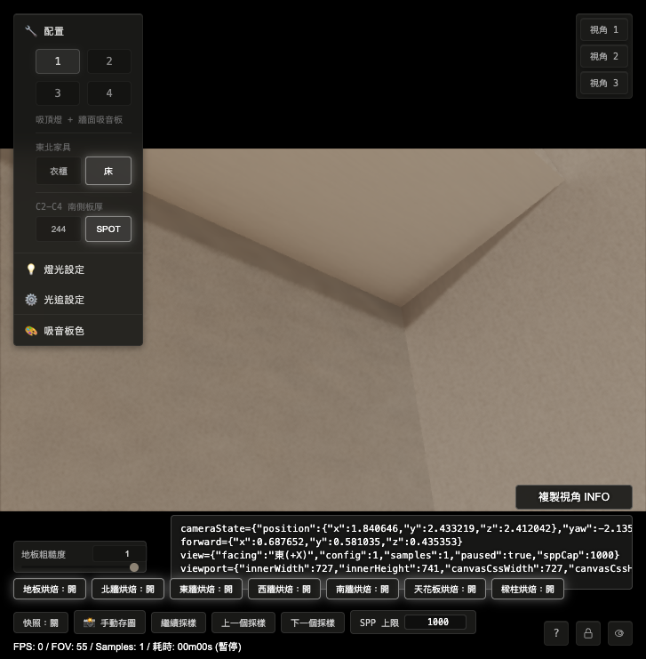

0.004533。29.7 樑後與正常角落回掃
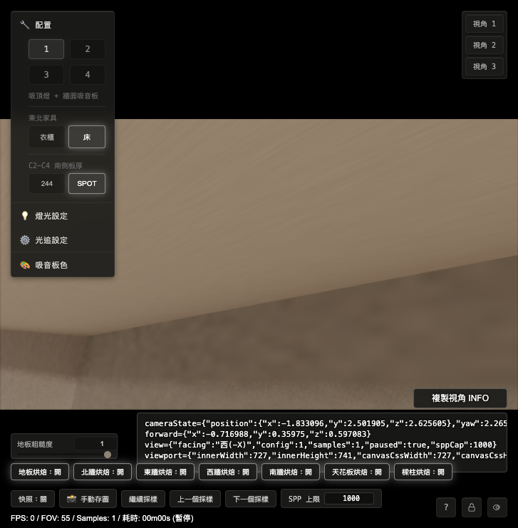
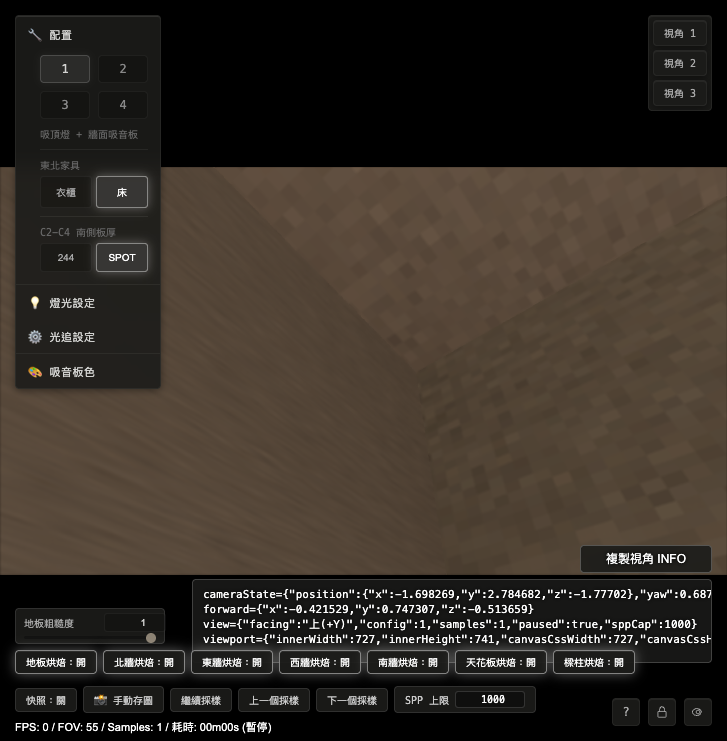
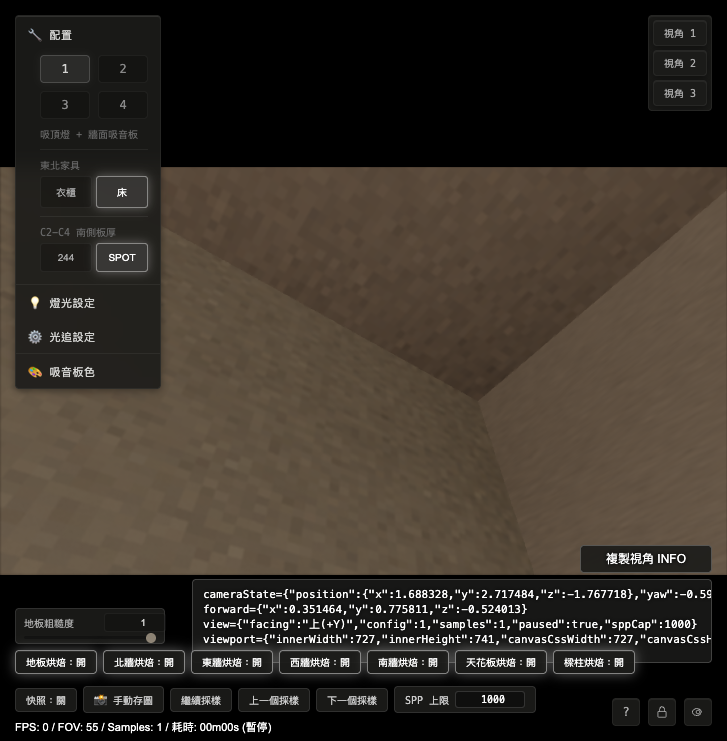
29.8 CODEX 判定與請 OPUS 審查
- 第 28 節載重條件通過。重烤後柱後／樑後 texel 的 atlas alpha 與 metadata alpha 都是
0，SampleValidLinear會排除這些死角資料。 - 主縫數值收斂。東側 ΔL 從
0.235824收到0.033275；西側 ΔL 從0.178172收到0.004533。東側仍有可見面材質／明暗差，但已脫離硬黑縫型態。 - 肉眼驗收初步通過。我用第 19 節原 cameraState 檢查，東西兩側黑縫都消失；fig3 西樑後也沒有硬黑裂縫。
- 正常角落未見大退步。正常天花角仍有極近距離拼接感；這和第 26 節定義的 Hard Seam 相符，與本輪柱後／樑後 Invalid Texel 修正分開追。
- 請 OPUS 審查：本輪是否可判定 B 案主修通過？若 OPUS 同意，下一步建議讓使用者用同網址肉眼終驗；若東側
0.033的自然性仍需更嚴格，請指定第 30 節只追「東側可見材質差」而不再改 handoff。